1 .Cargar paquetes
Mostrar código
ipak <- function(pkg){
options(repos = c(CRAN="https://cloud.r-project.org"))
new.pkg <- pkg[!(pkg %in% rownames(installed.packages()))]
if(length(new.pkg)) install.packages(new.pkg, dependencies = TRUE)
invisible(lapply(pkg, function(p)
suppressPackageStartupMessages(library(p, character.only = TRUE))
))
}
packages <- c("tidyverse","kableExtra","psych","readxl")
ipak(packages)2 .Introducción
Una distribución de frecuencias constituye una de las herramientas fundamentales del análisis estadístico descriptivo. Su propósito es organizar y resumir un conjunto de datos mediante el conteo de las veces que aparece cada valor o categoría de una variable.
Cuando se analiza una sola variable, se construye una distribución de frecuencias unidimensional. Cuando se estudian simultáneamente dos variables, se utiliza una distribución de frecuencias bidimensional, también conocida como tabla de contingencia cuando las variables son categóricas.
Estas herramientas permiten transformar grandes cantidades de información en estructuras organizadas que facilitan la interpretación, comparación y representación gráfica de los datos.
2.1 .Distribución de frecuencias unidimensional
Concepto
Una distribución de frecuencias unidimensional organiza los valores observados de una única variable junto con el número de veces que aparece cada valor o categoría.
Sea:
X=\{x_1,x_2,\ldots,x_n\}
un conjunto de n observaciones de una variable estadística X.
La distribución de frecuencias permite determinar cuántas observaciones corresponden a cada valor o categoría de la variable.
Elementos de una distribución de frecuencias
Una tabla de frecuencias puede contener las siguientes columnas:
| Símbolo | Nombre | Interpretación |
|---|---|---|
| x_i | Valor o categoría | Valor observado de la variable |
| f_i | Frecuencia absoluta | Número de veces que aparece x_i |
| F_i | Frecuencia absoluta acumulada | Número de observaciones hasta x_i |
| h_i | Frecuencia relativa | Proporción de observaciones correspondiente a x_i |
| H_i | Frecuencia relativa acumulada | Proporción acumulada hasta x_i |
| % | Porcentaje | Frecuencia relativa expresada en porcentaje |
Frecuencia absoluta
La frecuencia absoluta de un valor x_i, representada por f_i, corresponde al número de veces que dicho valor aparece en el conjunto de datos.
Se cumple:
\sum_{i=1}^{k} f_i=n
donde:
- k = número de valores o categorías.
- f_i = frecuencia absoluta.
- n = tamaño de la muestra.
Ejemplo
Supongamos que se consulta a 20 ciudadanos sobre el número de trámites realizados durante el último año:
Mostrar código
tramites <- c(
1,2,1,3,2,4,1,2,3,1,
2,3,2,1,4,2,3,1,2,3
)
table(tramites)tramites
1 2 3 4
6 7 5 2 La función table() permite obtener las frecuencias absolutas.
Frecuencia absoluta acumulada
La frecuencia absoluta acumulada se representa mediante F_i y corresponde a la suma progresiva de las frecuencias absolutas.
Se calcula mediante:
F_i=\sum_{j=1}^{i}f_j
Por tanto:
F_1=f_1
F_2=f_1+f_2
F_3=f_1+f_2+f_3
y así sucesivamente.
La última frecuencia acumulada debe ser igual al tamaño de la muestra:
F_k=n
En R
Mostrar código
freq <- table(tramites)
freq_abs_acum <- cumsum(freq)
freq_abs_acum 1 2 3 4
6 13 18 20 La función cumsum() calcula sumas acumuladas.
Frecuencia relativa
La frecuencia relativa indica la proporción de observaciones que corresponde a cada valor o categoría.
Se representa mediante h_i y se calcula como:
h_i=\frac{f_i}{n}
La suma de todas las frecuencias relativas debe ser:
\sum_{i=1}^{k}h_i=1
En porcentaje
Para expresar la frecuencia relativa como porcentaje:
p_i=h_i\times100
Por ejemplo, si:
h_i=0.25
entonces:
p_i=0.25(100)=25\%
Frecuencia relativa acumulada
La frecuencia relativa acumulada se representa mediante H_i.
Se calcula mediante:
H_i=\sum_{j=1}^{i}h_j
También puede calcularse directamente como:
H_i=\frac{F_i}{n}
La última frecuencia relativa acumulada debe ser:
H_k=1
o equivalentemente:
H_k=100\%
Tabla de frecuencias completa
Una tabla de frecuencias para una variable cuantitativa discreta puede estructurarse así:
| x_i | f_i | F_i | h_i | H_i | % |
|---|---|---|---|---|---|
| x_1 | f_1 | F_1 | h_1 | H_1 | 100h_1 |
| x_2 | f_2 | F_2 | h_2 | H_2 | 100h_2 |
| \vdots | \vdots | \vdots | \vdots | \vdots | \vdots |
| x_k | f_k | n | 1 | 1 | 100 |
Construcción de una tabla de frecuencias en R
Una forma sencilla de construir una tabla completa es:
Mostrar código
frecuencias <- as.data.frame(table(tramites))
names(frecuencias) <- c("Valor", "fi")
frecuencias$Fi <- cumsum(frecuencias$fi)
frecuencias$hi <- frecuencias$fi / sum(frecuencias$fi)
frecuencias$Hi <- cumsum(frecuencias$hi)
frecuencias$Porcentaje <- frecuencias$hi * 100
frecuencias Valor fi Fi hi Hi Porcentaje
1 1 6 6 0.30 0.30 30
2 2 7 13 0.35 0.65 35
3 3 5 18 0.25 0.90 25
4 4 2 20 0.10 1.00 10Para redondear:
Mostrar código
frecuencias$hi <- round(frecuencias$hi, 4)
frecuencias$Hi <- round(frecuencias$Hi, 4)
frecuencias$Porcentaje <- round(
frecuencias$Porcentaje, 2
)
frecuencias Valor fi Fi hi Hi Porcentaje
1 1 6 6 0.30 0.30 30
2 2 7 13 0.35 0.65 35
3 3 5 18 0.25 0.90 25
4 4 2 20 0.10 1.00 10Distribuciones de frecuencia para variables cualitativas
Cuando la variable es cualitativa, los valores representan categorías.
Ejemplo
Supongamos una encuesta realizada a 30 ciudadanos sobre el nivel de satisfacción con un servicio público:
Mostrar código
satisfaccion <- c(
"Alta","Media","Baja","Alta","Media",
"Alta","Baja","Media","Alta","Alta",
"Media","Baja","Alta","Media","Alta",
"Baja","Media","Alta","Media","Alta",
"Baja","Alta","Media","Alta","Media",
"Baja","Alta","Media","Alta","Media"
)
table(satisfaccion)satisfaccion
Alta Baja Media
13 6 11 La tabla puede complementarse con porcentajes:
Mostrar código
prop.table(table(satisfaccion))satisfaccion
Alta Baja Media
0.4333333 0.2000000 0.3666667 Y expresarse en porcentaje:
Mostrar código
round(prop.table(table(satisfaccion)) * 100, 2)satisfaccion
Alta Baja Media
43.33 20.00 36.67
Representación gráfica de una distribución unidimensional
La elección del gráfico depende del tipo de variable.
| Tipo de variable | Gráfico recomendado |
|---|---|
| Cualitativa nominal | Barras |
| Cualitativa ordinal | Barras ordenadas |
| Cuantitativa discreta | Barras |
| Cuantitativa continua | Histograma |
| Cuantitativa | Polígono de frecuencias |
| Cuantitativa | Ojiva para frecuencias acumuladas |
Gráfico de barras
Mostrar código
library(ggplot2)
ggplot(data.frame(satisfaccion), aes(x = satisfaccion, fill = satisfaccion)) +
geom_bar(width = 0.65, show.legend = FALSE) +
scale_fill_manual(values = c(
"Alta" = "#AB47BC", # Lila intermedio / brillante
"Baja" = "#E1BEE7", # Lila claro pastel
"Media" = "#7B1FA2" # Morado más profundo
)) +
labs(
title = "Nivel de satisfacción de los ciudadanos",
x = "Nivel de satisfacción",
y = "Frecuencia"
) +
theme_minimal(base_size = 13) +
theme(
plot.title = element_text(face = "bold", color = "#4A148C", size = 14, hjust = 0.5),
axis.title = element_text(face = "bold", color = "#6A1B9A"),
axis.text = element_text(color = "#4A148C", face = "bold"),
panel.grid.major.x = element_blank(),
panel.grid.minor = element_blank(),
panel.grid.major.y = element_line(color = "#F3E5F5", linetype = "dashed")
)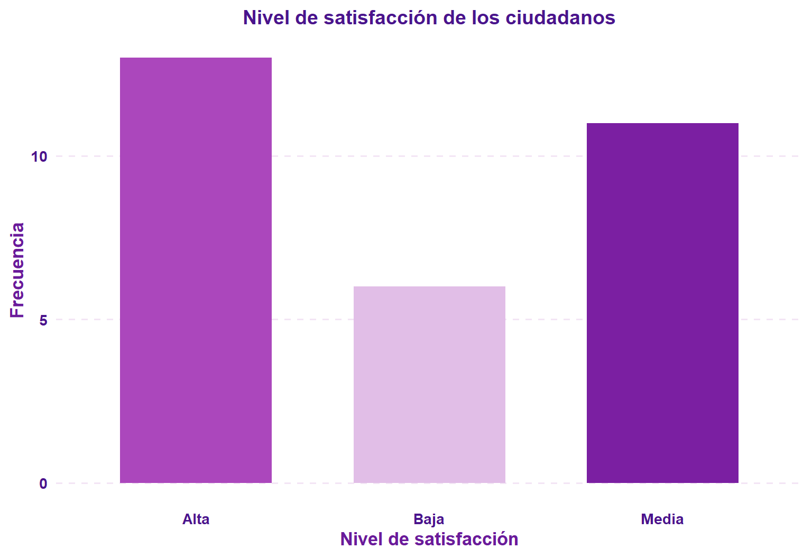
2.2 .Distribución de frecuencias para datos agrupados
Cuando una variable cuantitativa continua presenta muchos valores diferentes, puede ser conveniente agruparlos en intervalos de clase.
Por ejemplo:
[20,30),\quad [30,40),\quad [40,50),\quad [50,60)
Cada intervalo contiene un conjunto de valores.
Elementos de una distribución agrupada
Para cada intervalo pueden calcularse:
- Límite inferior.
- Límite superior.
- Marca de clase.
- Frecuencia absoluta.
- Frecuencia acumulada.
- Frecuencia relativa.
- Frecuencia relativa acumulada.
La marca de clase se calcula mediante:
x_i=\frac{L_i+U_i}{2}
donde:
- L_i = límite inferior.
- U_i = límite superior.
Número de intervalos
Una regla frecuente para determinar aproximadamente el número de clases es la regla de Sturges:
k=1+3.322\log_{10}(n)
donde n representa el tamaño de la muestra.
Otra expresión equivalente es:
k=1+\log_2(n)
Una vez determinado k, puede calcularse la amplitud aproximada:
A=\frac{R}{k}
donde:
R=X_{\max}-X_{\min}
es el rango.
Ejemplo con datos cuantitativos
Supongamos que se dispone de los ingresos mensuales de 40 usuarios, expresados en millones de pesos:
Mostrar código
set.seed(123)
ingresos <- round(
runif(40, 1.2, 6.5),
2
)
ingresos [1] 2.72 5.38 3.37 5.88 6.18 1.44 4.00 5.93 4.12 3.62 6.27 3.60 4.79 4.23 1.75
[16] 5.97 2.50 1.42 2.94 6.26 5.91 4.87 4.59 6.47 4.68 4.96 4.08 4.35 2.73 1.98
[31] 6.30 5.98 4.86 5.42 1.33 3.73 5.22 2.35 2.89 2.43Podemos construir intervalos mediante cut():
Mostrar código
intervalos <- cut(
ingresos,
breaks = c(1, 2, 3, 4, 5, 6, 7),
right = FALSE
)
table(intervalos)intervalos
[1,2) [2,3) [3,4) [4,5) [5,6) [6,7)
5 7 4 11 8 5 Histograma
Para representar una variable cuantitativa continua:
Mostrar código
library(ggplot2)
ggplot(data.frame(ingresos), aes(x = ingresos, fill = after_stat(count))) +
geom_histogram(
bins = 6,
color = "white",
alpha = 0.9,
show.legend = FALSE
) +
scale_fill_gradient(
low = "#E1BEE7", # Lila pastel suave para la barra de menor frecuencia
high = "#6A1B9A" # Morado oscuro intenso para la barra de mayor frecuencia
) +
labs(
title = "Distribución de los ingresos mensuales",
x = "Ingresos (millones de pesos)",
y = "Frecuencia"
) +
theme_minimal(base_size = 13) +
theme(
plot.title = element_text(face = "bold", color = "#4A148C", size = 14, hjust = 0.5),
axis.title = element_text(face = "bold", color = "#6A1B9A"),
axis.text = element_text(color = "#4A148C", face = "bold"),
panel.grid.major.x = element_blank(),
panel.grid.minor = element_blank(),
panel.grid.major.y = element_line(color = "#F3E5F5", linetype = "dashed")
)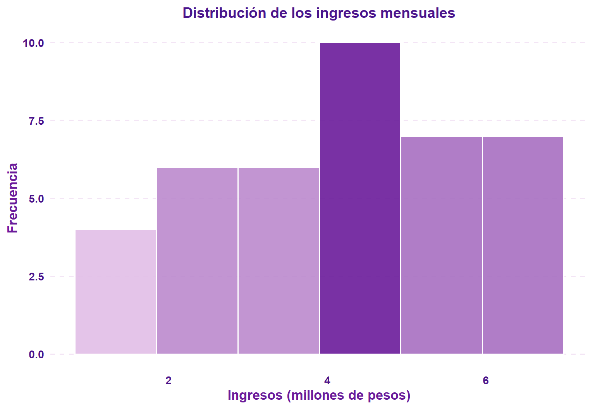
2.3 .Distribución de frecuencias bidimensional
Concepto
Una distribución de frecuencias bidimensional estudia simultáneamente dos variables estadísticas.
Sean:
X \quad \text{y} \quad Y
dos variables observadas sobre los mismos individuos.
El objetivo consiste en analizar cómo se distribuyen conjuntamente los valores de ambas variables.
Por ejemplo:
- Edad y satisfacción.
- Nivel educativo y satisfacción.
- Estrato y acceso a un programa social.
- Modalidad de atención y satisfacción.
- Género y tipo de servicio utilizado.
Tabla de contingencia
Cuando las dos variables son cualitativas o categóricas, la distribución bidimensional suele representarse mediante una tabla de contingencia.
Supongamos que se estudian:
- X: modalidad de atención.
- Y: nivel de satisfacción.
La tabla puede tener la siguiente estructura:
| Modalidad | Alta | Media | Baja | Total |
|---|---|---|---|---|
| Presencial | n_{11} | n_{12} | n_{13} | n_{1.} |
| Virtual | n_{21} | n_{22} | n_{23} | n_{2.} |
| Total | n_{.1} | n_{.2} | n_{.3} | n |
Los valores n_{ij} representan las frecuencias conjuntas.
Frecuencia conjunta
La frecuencia conjunta n_{ij} corresponde al número de individuos que simultáneamente presentan:
X=x_i
y
Y=y_j
Por ejemplo:
n_{23}
representaría el número de individuos pertenecientes a la categoría 2 de X y a la categoría 3 de Y.
Frecuencias marginales
Las frecuencias marginales se obtienen sumando las frecuencias de las filas o columnas.
Frecuencia marginal de X
n_{i.}=\sum_j n_{ij}
Frecuencia marginal de Y
n_{.j}=\sum_i n_{ij}
El total general es:
n=\sum_i\sum_j n_{ij}
Frecuencias relativas bidimensionales
La frecuencia relativa conjunta se calcula como:
h_{ij}=\frac{n_{ij}}{n}
y cumple:
\sum_i\sum_jh_{ij}=1
En porcentaje:
p_{ij}=100h_{ij}
Frecuencias condicionales
Las frecuencias condicionales permiten analizar la distribución de una variable dentro de una categoría específica de la otra variable.
Si queremos analizar Y condicionado a X=x_i:
h_{j|i}= \frac{n_{ij}}{n_{i.}}
Si queremos analizar X condicionado a Y=y_j:
h_{i|j}= \frac{n_{ij}}{n_{.j}}
Las frecuencias condicionales son fundamentales para estudiar posibles relaciones entre dos variables.
Ejemplo de tabla bidimensional en R
Consideremos una encuesta realizada a 100 ciudadanos:
Mostrar código
datos <- data.frame(
Modalidad = c(
"Presencial","Presencial","Presencial",
"Virtual","Virtual","Virtual"
),
Satisfaccion = c(
"Alta","Media","Baja",
"Alta","Media","Baja"
),
Frecuencia = c(
30,15,5,
20,20,10
)
)
datos Modalidad Satisfaccion Frecuencia
1 Presencial Alta 30
2 Presencial Media 15
3 Presencial Baja 5
4 Virtual Alta 20
5 Virtual Media 20
6 Virtual Baja 10Para obtener una tabla de contingencia:
Mostrar código
tabla <- xtabs(
Frecuencia ~ Modalidad + Satisfaccion,
data = datos
)
tabla Satisfaccion
Modalidad Alta Baja Media
Presencial 30 5 15
Virtual 20 10 20El resultado conceptual es:
| Modalidad | Alta | Media | Baja |
|---|---|---|---|
| Presencial | 30 | 15 | 5 |
| Virtual | 20 | 20 | 10 |
Totales marginales en R
Podemos obtener los totales de filas y columnas mediante:
Mostrar código
addmargins(tabla) Satisfaccion
Modalidad Alta Baja Media Sum
Presencial 30 5 15 50
Virtual 20 10 20 50
Sum 50 15 35 100También:
Mostrar código
margin.table(tabla, 1)Modalidad
Presencial Virtual
50 50 permite obtener las frecuencias marginales de las filas.
Mientras:
Mostrar código
margin.table(tabla, 2)Satisfaccion
Alta Baja Media
50 15 35 obtiene las frecuencias marginales de las columnas.
Frecuencias relativas en R
Para obtener las frecuencias relativas conjuntas:
Mostrar código
prop.table(tabla) Satisfaccion
Modalidad Alta Baja Media
Presencial 0.30 0.05 0.15
Virtual 0.20 0.10 0.20Para obtener porcentajes:
Mostrar código
round(prop.table(tabla) * 100, 2) Satisfaccion
Modalidad Alta Baja Media
Presencial 30 5 15
Virtual 20 10 20Porcentajes por fila
Para estudiar la distribución de la satisfacción dentro de cada modalidad:
Mostrar código
prop.table(tabla, 1) Satisfaccion
Modalidad Alta Baja Media
Presencial 0.6 0.1 0.3
Virtual 0.4 0.2 0.4En porcentaje:
Mostrar código
round(prop.table(tabla, 1) * 100, 2) Satisfaccion
Modalidad Alta Baja Media
Presencial 60 10 30
Virtual 40 20 40La opción margin = 1 indica que los porcentajes se calculan por fila.
Porcentajes por columna
Para estudiar la distribución de la modalidad dentro de cada nivel de satisfacción:
Mostrar código
prop.table(tabla, 2) Satisfaccion
Modalidad Alta Baja Media
Presencial 0.6000000 0.3333333 0.4285714
Virtual 0.4000000 0.6666667 0.5714286En porcentaje:
Mostrar código
round(prop.table(tabla, 2) * 100, 2) Satisfaccion
Modalidad Alta Baja Media
Presencial 60.00 33.33 42.86
Virtual 40.00 66.67 57.14La opción margin = 2 indica que los porcentajes se calculan por columna.
Interpretación de una tabla bidimensional
Supongamos que para los usuarios de modalidad presencial se obtiene:
| Modalidad | Alta | Media | Baja |
|---|---|---|---|
| Presencial | 30 | 15 | 5 |
El total de usuarios presenciales es:
30+15+5=50
Por tanto, la proporción de usuarios presenciales con satisfacción alta es:
\frac{30}{50}=0.60
o:
60\%
Una interpretación estadística sería:
El 60 % de los usuarios atendidos mediante la modalidad presencial presenta un nivel de satisfacción alto.
Es importante distinguir este resultado de un porcentaje calculado sobre el total general de la muestra.
Visualización de una distribución bidimensional
Una tabla de contingencia puede representarse mediante un gráfico de barras.
Mostrar código
library(ggplot2)
datos_grafico <- data.frame(
Modalidad = rep(c("Presencial", "Virtual"), each = 3),
Satisfaccion = rep(c("Alta", "Media", "Baja"), 2),
Frecuencia = c(30, 15, 5, 20, 20, 10)
)
ggplot(datos_grafico, aes(x = Modalidad, y = Frecuencia, fill = Satisfaccion)) +
geom_col(position = "dodge", width = 0.7, color = "white") +
scale_fill_manual(values = c(
"Alta" = "#7B1FA2", # Morado oscuro
"Media" = "#AB47BC", # Lila intermedio
"Baja" = "#E1BEE7" # Lila pastel claro
)) +
labs(
title = "Satisfacción según modalidad de atención",
x = "Modalidad",
y = "Frecuencia",
fill = "Satisfacción"
) +
theme_minimal(base_size = 13) +
theme(
plot.title = element_text(face = "bold", color = "#4A148C", size = 14, hjust = 0.5),
axis.title = element_text(face = "bold", color = "#6A1B9A"),
axis.text = element_text(color = "#4A148C", face = "bold"),
legend.title = element_text(face = "bold", color = "#6A1B9A"),
legend.position = "right",
panel.grid.major.x = element_blank(),
panel.grid.minor = element_blank(),
panel.grid.major.y = element_line(color = "#F3E5F5", linetype = "dashed")
)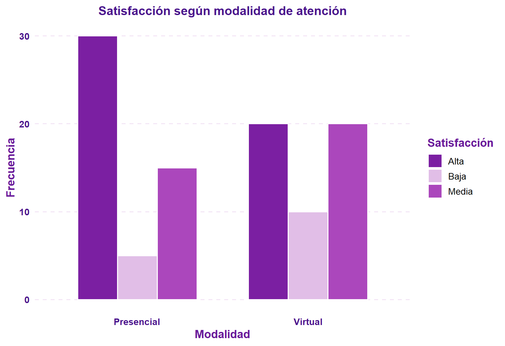
Gráfico de barras apiladas
También puede utilizarse:
Mostrar código
ggplot(
datos_grafico,
aes(
x = Modalidad,
y = Frecuencia,
fill = Satisfaccion
)
) +
geom_col(color = "white", width = 0.6) +
scale_fill_manual(values = c(
"Alta" = "#7B1FA2", # Morado oscuro
"Media" = "#AB47BC", # Lila intermedio
"Baja" = "#E1BEE7" # Lila pastel claro
)) +
labs(
title = "Distribución de la satisfacción según modalidad",
x = "Modalidad",
y = "Frecuencia",
fill = "Satisfacción"
) +
theme_minimal(base_size = 13) +
theme(
plot.title = element_text(face = "bold", color = "#4A148C", size = 14, hjust = 0.5),
axis.title = element_text(face = "bold", color = "#6A1B9A"),
axis.text = element_text(color = "#4A148C", face = "bold"),
legend.title = element_text(face = "bold", color = "#6A1B9A"),
legend.position = "right",
panel.grid.major.x = element_blank(),
panel.grid.minor = element_blank(),
panel.grid.major.y = element_line(color = "#F3E5F5", linetype = "dashed")
)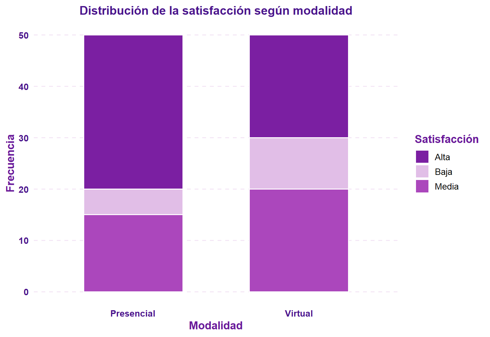
Barras proporcionales
Para comparar estructuras porcentuales entre grupos:
Mostrar código
ggplot(
datos_grafico,
aes(
x = Modalidad,
y = Frecuencia,
fill = Satisfaccion
)
) +
geom_col(position = "fill", color = "white", width = 0.6) +
scale_y_continuous(labels = scales::percent) +
scale_fill_manual(values = c(
"Alta" = "#7B1FA2", # Morado oscuro
"Media" = "#AB47BC", # Lila intermedio
"Baja" = "#E1BEE7" # Lila pastel claro
)) +
labs(
title = "Distribución porcentual de la satisfacción",
x = "Modalidad",
y = "Porcentaje",
fill = "Satisfacción"
) +
theme_minimal(base_size = 13) +
theme(
plot.title = element_text(face = "bold", color = "#4A148C", size = 14, hjust = 0.5),
axis.title = element_text(face = "bold", color = "#6A1B9A"),
axis.text = element_text(color = "#4A148C", face = "bold"),
legend.title = element_text(face = "bold", color = "#6A1B9A"),
legend.position = "right",
panel.grid.major.x = element_blank(),
panel.grid.minor = element_blank(),
panel.grid.major.y = element_line(color = "#F3E5F5", linetype = "dashed")
)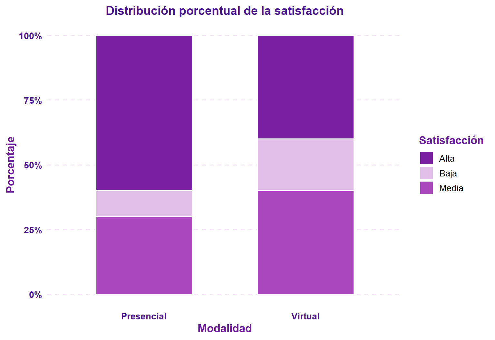
Este gráfico resulta especialmente útil cuando los tamaños de los grupos son diferentes.
Distribución bidimensional y asociación
Una de las principales aplicaciones de las tablas bidimensionales consiste en estudiar si existe una posible relación o asociación entre dos variables.
Por ejemplo:
\text{Modalidad de atención} \quad\longleftrightarrow\quad \text{Satisfacción}
Si las distribuciones condicionales son muy diferentes entre las modalidades, puede existir evidencia descriptiva de asociación.
Sin embargo, una diferencia descriptiva no significa necesariamente que exista una asociación estadísticamente significativa.
Para evaluar formalmente la asociación entre dos variables categóricas puede utilizarse, entre otras herramientas, la prueba chi-cuadrado de independencia.
Prueba chi-cuadrado en R
A partir de una tabla de contingencia:
Mostrar código
chisq.test(tabla)
Pearson's Chi-squared test
data: tabla
X-squared = 4.381, df = 2, p-value = 0.1119La hipótesis nula es:
H_0: \text{Las variables son independientes}
Mientras que la hipótesis alternativa es:
H_1: \text{Las variables no son independientes}
La decisión estadística se basa generalmente en el valor-p.
Si:
p<\alpha
se rechaza H_0.
Si:
p\geq\alpha
no se rechaza H_0.
Es habitual utilizar:
\alpha=0.05
2.4 .Diferencia entre distribución unidimensional y bidimensional
| Característica | Unidimensional | Bidimensional |
|---|---|---|
| Número de variables | 1 | 2 |
| Objetivo | Describir una variable | Analizar dos variables conjuntamente |
| Tabla principal | Tabla de frecuencias | Tabla de contingencia |
| Frecuencia | f_i | n_{ij} |
| Frecuencia marginal | No aplica | Sí |
| Frecuencia conjunta | No aplica | Sí |
| Frecuencia condicional | No aplica | Sí |
| Asociación | No | Sí |
| Chi-cuadrado | No necesariamente | Sí, para variables categóricas |
Funciones fundamentales de R
Las siguientes funciones son especialmente útiles para trabajar con distribuciones de frecuencias:
| Función | Utilidad |
|---|---|
table() |
Frecuencias absolutas |
prop.table() |
Frecuencias relativas |
cumsum() |
Frecuencias acumuladas |
xtabs() |
Tablas de contingencia |
addmargins() |
Totales marginales |
margin.table() |
Frecuencias marginales |
cut() |
Agrupar variables cuantitativas |
ggplot() |
Visualización |
geom_bar() |
Gráfico de barras |
geom_col() |
Barras con frecuencias existentes |
geom_histogram() |
Histograma |
chisq.test() |
Prueba chi-cuadrado |
Función general para construir una tabla de frecuencias
En R podemos crear una función reutilizable:
Mostrar código
tabla_frecuencias <- function(x) {
fi <- table(x)
tabla <- data.frame(
Valor = names(fi),
fi = as.vector(fi)
)
tabla$Fi <- cumsum(tabla$fi)
tabla$hi <- tabla$fi / sum(tabla$fi)
tabla$Hi <- cumsum(tabla$hi)
tabla$Porcentaje <- tabla$hi * 100
tabla
}Aplicación:
Mostrar código
tabla_frecuencias(satisfaccion) Valor fi Fi hi Hi Porcentaje
1 Alta 13 13 0.4333333 0.4333333 43.33333
2 Baja 6 19 0.2000000 0.6333333 20.00000
3 Media 11 30 0.3666667 1.0000000 36.66667
Recomendaciones para el análisis estadístico
Al construir e interpretar una distribución de frecuencias es importante:
- Identificar correctamente el tipo de variable.
- Diferenciar variables cualitativas y cuantitativas.
- Utilizar frecuencias absolutas cuando interesa conocer cantidades.
- Utilizar frecuencias relativas o porcentajes cuando se desean comparar grupos.
- Emplear frecuencias acumuladas cuando la variable posee un orden natural.
- Para datos continuos con muchos valores, considerar agrupación en intervalos.
- En tablas bidimensionales, especificar claramente si los porcentajes se calculan por filas, columnas o sobre el total.
- Complementar las tablas con representaciones gráficas apropiadas.
- No confundir asociación descriptiva con causalidad.
- Cuando sea pertinente, complementar el análisis descriptivo con pruebas estadísticas.
Flujo de trabajo recomendado en RStudio
Un análisis profesional puede seguir la siguiente secuencia:
Importación de datos
↓
Exploración de variables
↓
Identificación del tipo de variable
↓
Distribución unidimensional
↓
Frecuencias absolutas y relativas
↓
Representación gráfica
↓
Distribución bidimensional
↓
Frecuencias conjuntas y marginales
↓
Porcentajes condicionales
↓
Representación gráfica
↓
Análisis de asociación
↓
Interpretación estadística2.5 .Conclusiones
Las distribuciones de frecuencias unidimensionales permiten organizar y resumir la información correspondiente a una sola variable mediante frecuencias absolutas, acumuladas, relativas y porcentuales.
Las distribuciones de frecuencias bidimensionales permiten analizar conjuntamente dos variables y constituyen una herramienta fundamental para estudiar patrones de asociación mediante frecuencias conjuntas, marginales y condicionales.
En R/RStudio, funciones como table(), prop.table(), cumsum(), xtabs() y ggplot2 permiten automatizar gran parte del proceso de construcción, análisis y visualización de las distribuciones de frecuencias.
El análisis estadístico debe ir más allá de la construcción mecánica de tablas: es fundamental interpretar los resultados dentro del contexto de investigación y seleccionar correctamente los porcentajes, gráficos y procedimientos estadísticos de acuerdo con el tipo de variables estudiadas.
- Resumen de fórmulas
Frecuencia absoluta
f_i
Frecuencia absoluta acumulada
F_i=\sum_{j=1}^{i}f_j
Frecuencia relativa
h_i=\frac{f_i}{n}
Frecuencia relativa acumulada
H_i=\sum_{j=1}^{i}h_j
Porcentaje
p_i=100h_i
Frecuencia conjunta
n_{ij}
Frecuencia marginal de X
n_{i.}=\sum_jn_{ij}
Frecuencia marginal de Y
n_{.j}=\sum_in_{ij}
Frecuencia relativa conjunta
h_{ij}=\frac{n_{ij}}{n}
Frecuencia condicional
h_{j|i}=\frac{n_{ij}}{n_{i.}}
Regla de Sturges
k=1+3.322\log_{10}(n)
Amplitud
A=\frac{R}{k}
Rango
R=X_{\max}-X_{\min}
Marca de clase
x_i=\frac{L_i+U_i}{2}
Mostrar código
library(tidyverse)
library(readxl)3 .Leer el Dataset
Mostrar código
educacion <- read_excel("datos/educacion.xlsx")4 .Conocer Dataset
Mostrar algunas filas del dataset
Mostrar código
head(educacion)# A tibble: 6 × 10
ID Genero Nivel_Educativo Estrato Cursos Horas Promedio `Asistencia (%)`
<dbl> <chr> <chr> <chr> <dbl> <dbl> <dbl> <dbl>
1 1 Femenino Universidad Alto 5 26.8 4.37 51.3
2 2 Femenino Universidad Bajo 4 9.05 4.9 51.1
3 3 Femenino Secundaria Medio 8 28.2 1.26 92.4
4 4 Femenino Universidad Bajo 6 17.9 1.96 64.8
5 5 Masculino Universidad Alto 4 15.9 3.6 57.0
6 6 Masculino Primaria Bajo 2 27.6 4.58 76.1
# ℹ 2 more variables: Tecnologia <chr>, Satisfaccion <chr>
Número de variables
Mostrar código
educacion %>% names %>% length()[1] 10
Nombres de las variables
Mostrar código
names(educacion) [1] "ID" "Genero" "Nivel_Educativo" "Estrato"
[5] "Cursos" "Horas" "Promedio" "Asistencia (%)"
[9] "Tecnologia" "Satisfaccion"
Estructura de las variables
Mostrar código
glimpse(educacion)Rows: 300
Columns: 10
$ ID <dbl> 1, 2, 3, 4, 5, 6, 7, 8, 9, 10, 11, 12, 13, 14, 15, 16…
$ Genero <chr> "Femenino", "Femenino", "Femenino", "Femenino", "Masc…
$ Nivel_Educativo <chr> "Universidad", "Universidad", "Secundaria", "Universi…
$ Estrato <chr> "Alto", "Bajo", "Medio", "Bajo", "Alto", "Bajo", "Baj…
$ Cursos <dbl> 5, 4, 8, 6, 4, 2, 2, 6, 8, 4, 6, 2, 2, 6, 8, 5, 1, 8,…
$ Horas <dbl> 26.82, 9.05, 28.19, 17.86, 15.87, 27.63, 3.31, 14.81,…
$ Promedio <dbl> 4.37, 4.90, 1.26, 1.96, 3.60, 4.58, 1.47, 3.89, 4.65,…
$ `Asistencia (%)` <dbl> 51.29, 51.06, 92.35, 64.85, 57.01, 76.11, 84.15, 93.2…
$ Tecnologia <chr> "Bajo", "Bajo", "Bajo", "Medio", "Alto", "Medio", "Ba…
$ Satisfaccion <chr> "Muy alta", "Media", "Muy alta", "Muy alta", "Muy baj…
Transformar las variables
Mostrar código
educacion$Genero <- as.factor(educacion$Genero)
educacion$Nivel_Educativo <- factor(educacion$Nivel_Educativo,
levels = c("Primaria", "Secundaria", "Universidad"), ordered = TRUE)
educacion$Estrato <- factor(educacion$Estrato,
levels = c("Bajo", "Medio", "Alto"), ordered = TRUE)
educacion$Tecnologia <- factor(educacion$Tecnologia,
levels = c("Bajo", "Medio", "Alto"), ordered = TRUE)
educacion$Satisfaccion <- factor(educacion$Satisfaccion,
levels = c("Muy baja", "Baja", "Media", "Alta", "Muy alta"), ordered = TRUE)
Nueva estructura de las variables
Mostrar código
glimpse(educacion)Rows: 300
Columns: 10
$ ID <dbl> 1, 2, 3, 4, 5, 6, 7, 8, 9, 10, 11, 12, 13, 14, 15, 16…
$ Genero <fct> Femenino, Femenino, Femenino, Femenino, Masculino, Ma…
$ Nivel_Educativo <ord> Universidad, Universidad, Secundaria, Universidad, Un…
$ Estrato <ord> Alto, Bajo, Medio, Bajo, Alto, Bajo, Bajo, Medio, Med…
$ Cursos <dbl> 5, 4, 8, 6, 4, 2, 2, 6, 8, 4, 6, 2, 2, 6, 8, 5, 1, 8,…
$ Horas <dbl> 26.82, 9.05, 28.19, 17.86, 15.87, 27.63, 3.31, 14.81,…
$ Promedio <dbl> 4.37, 4.90, 1.26, 1.96, 3.60, 4.58, 1.47, 3.89, 4.65,…
$ `Asistencia (%)` <dbl> 51.29, 51.06, 92.35, 64.85, 57.01, 76.11, 84.15, 93.2…
$ Tecnologia <ord> Bajo, Bajo, Bajo, Medio, Alto, Medio, Bajo, Medio, Al…
$ Satisfaccion <ord> Muy alta, Media, Muy alta, Muy alta, Muy baja, Alta, …5 .Tablas y Graficas
5.1 .Variable Nominal
Distribución de Frecuencias para la Evaluación de Variables Socioeducativas mediante Métodos Estadísticos Descriptivos en Estudiantes de Licenciatura en Matemáticas de la Universidad del Tolima. Ibagué, Octubre 2026.
Mostrar código
# Crear la tabla original
tabla <- tibble(Genero = educacion$Genero) %>%
group_by(Genero) %>%
summarise(fi = n()) %>%
mutate(
hi = round(fi/sum(fi), 4),
Porcentaje = paste0(hi*100, "%"),)
# Convertir las columnas a character para evitar conflictos
tabla <- tabla %>% mutate(
Genero = as.character(Genero))
# Añadir la fila de totales
totales <- tibble(
Genero = "Total",
fi = sum(tabla$fi),
hi = round(sum(tabla$hi), 4),
Porcentaje = paste0(round(sum(tabla$hi) * 100, 2), "%"))
# Combinar la tabla con los totales
tabla_final <- bind_rows(tabla, totales)
# Mostrar la tabla final con kable
tabla_final %>%
knitr::kable(
col.names = c("Genero", "$f_i$", "$h_i$", "Porcentaje"),
align = c("l", "c", "c", "c")
)| Genero | f_i | h_i | Porcentaje |
|---|---|---|---|
| Femenino | 161 | 0.5367 | 53.67% |
| Masculino | 139 | 0.4633 | 46.33% |
| Total | 300 | 1.0000 | 100% |
Mostrar código
# Cargar las librerías necesarias
library(ggplot2)
library(dplyr)
# Calcular los porcentajes de cada categoría en la variable Genero
genero_counts <- educacion %>%
dplyr::count(Genero) %>%
mutate(porcentaje = n / sum(n) * 100)
# Crear el diagrama de barras
ggplot(genero_counts, aes(x = Genero, y = porcentaje, fill = Genero)) +
geom_bar(stat = "identity") +
scale_fill_manual(values = c("#8E24AA", "#BA68C8")) +
labs(
title = "Distribución Porcentual del Género de los Encuestados",
x = "Género",
y = "Porcentaje (%)"
) +
scale_y_continuous(
labels = scales::percent_format(scale = 1),
limits = c(0, max(genero_counts$porcentaje) * 1.15)
) +
geom_text(
aes(label = sprintf("%.1f%%", porcentaje)),
vjust = -0.5,
color = "black",
size = 3.5,
fontface = "bold"
) +
theme_minimal(base_size = 13) +
theme(
plot.title = element_text(hjust = 0.5, face = "bold", size = 13),
panel.grid.minor = element_blank(),
legend.position = "none"
)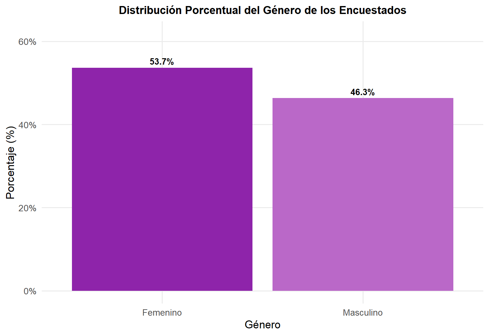
Mostrar código
# Cargar las librerías necesarias
library(ggplot2)
library(dplyr)
# Calcular los porcentajes de cada categoría en la variable Genero
genero_counts <- educacion %>%
dplyr::count(Genero) %>%
mutate(porcentaje = n / sum(n) * 100)
# Crear el diagrama circular
ggplot(genero_counts, aes(x = "", y = porcentaje, fill = Genero)) +
geom_bar(stat = "identity", width = 1) +
coord_polar("y") +
scale_fill_manual(values = c("#8E24AA", "#BA68C8")) +
labs(
title = "Distribución Porcentual del Género de los Encuestados",
fill = "Género"
) +
geom_text(
aes(label = sprintf("%.1f%%", porcentaje)),
position = position_stack(vjust = 0.5),
color = "white",
size = 4,
fontface = "bold"
) +
theme_minimal(base_size = 13) +
theme(
plot.title = element_text(hjust = 0.5, face = "bold", size = 13),
axis.title.x = element_blank(),
axis.title.y = element_blank(),
panel.grid = element_blank(),
axis.text.x = element_blank(),
legend.position = "right"
)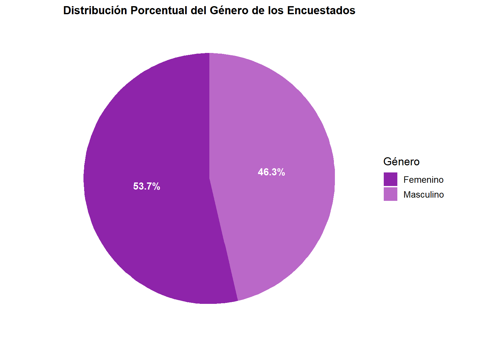
La muestra estuvo conformada por N = 300 estudiantes de la Licenciatura en Matemáticas de la Universidad del Tolima, observándose una distribución levemente predominantemente femenina, con 161 mujeres (53.67\%) y 139 hombres (46.33\%). La diferencia de 7.34 puntos porcentuales evidencia una representación equitativa entre ambos géneros, lo que asegura la ausencia de sesgos por hegemonía de género en los análisis posteriores de rendimiento, asistencia y uso de tecnología.
5.2 .Variable Ordinal
Distribución de Frecuencias para la Evaluación del Nivel Educativo alcanzado mediante Métodos Estadísticos Descriptivos en Estudiantes de Licenciatura en Matemáticas de la Universidad del Tolima. Ibagué, Octubre 2026.
Mostrar código
# Crear la tabla original
tabla <- tibble(Nivel = educacion$Nivel_Educativo) %>%
group_by(Nivel) %>%
summarise(fi = n()) %>%
mutate(
hi = round(fi/sum(fi), 4),
Porcentaje = paste0(hi*100, "%"),
Fi = cumsum(fi),
Hi = cumsum(hi)
)
# Convertir las columnas Fucion, Fi, y Hi a character para evitar conflictos
tabla <- tabla %>% mutate(
Nivel = as.character(Nivel),
Fi = as.character(Fi),
Hi = as.character(Hi)
)
# Añadir la fila de totales, dejando Fi y Hi vacíos
totales <- tibble(
Nivel = "Total",
fi = sum(tabla$fi),
hi = round(sum(tabla$hi), 4),
Porcentaje = paste0(round(sum(tabla$hi) * 100, 2), "%"),
Fi = "", # Puedes dejar en blanco o usar un valor numérico
Hi = "" # Puedes dejar en blanco o usar un valor numérico
)
# Combinar la tabla con los totales
tabla_final <- bind_rows(tabla, totales)
# Mostrar la tabla final con kable
tabla_final %>%
knitr::kable(
col.names = c("Nivel Educativo", "fi", "hi", "Porcentaje", "Fi", "Hi"),
align = c("l", "c", "c", "c", "c", "c")
)| Nivel Educativo | fi | hi | Porcentaje | Fi | Hi |
|---|---|---|---|---|---|
| Primaria | 93 | 0.31 | 31% | 93 | 0.31 |
| Secundaria | 105 | 0.35 | 35% | 198 | 0.66 |
| Universidad | 102 | 0.34 | 34% | 300 | 1 |
| Total | 300 | 1.00 | 100% |
Mostrar código
# Cargar las librerías necesarias
library(ggplot2)
library(dplyr)
# Calcular los porcentajes de cada categoría en la variable EDUCACION
escolaridad_counts <- educacion %>%
dplyr::count(Nivel_Educativo) %>%
mutate(porcentaje = n / sum(n) * 100)
# Crear el diagrama de barras
ggplot(escolaridad_counts, aes(x = Nivel_Educativo, y = porcentaje, fill = Nivel_Educativo)) +
geom_bar(stat = "identity") +
scale_fill_manual(values = c("#6A1B9A", "#8E24AA", "#BA68C8")) +
labs(
title = "Distribución Porcentual Según Nivel Educativo",
x = "Nivel Educativo",
y = "Porcentaje (%)"
) +
scale_y_continuous(
labels = scales::percent_format(scale = 1),
limits = c(0, max(escolaridad_counts$porcentaje) * 1.15)
) +
geom_text(
aes(label = sprintf("%.1f%%", porcentaje)),
vjust = -0.5,
color = "black",
size = 3.5,
fontface = "bold"
) +
theme_minimal(base_size = 13) +
theme(
plot.title = element_text(hjust = 0.5, face = "bold", size = 13),
panel.grid.minor = element_blank(),
legend.position = "none"
)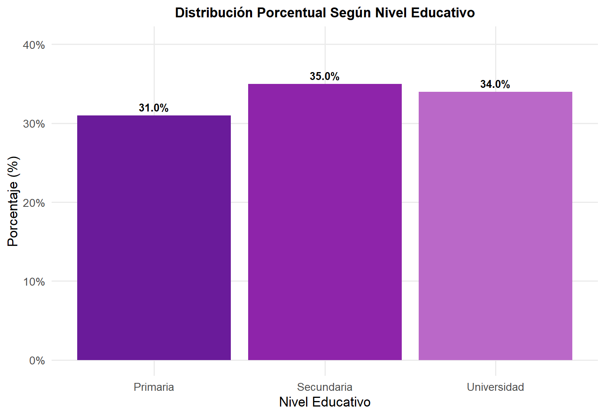
El análisis descriptivo de la variable ordinal nivel educativo para la muestra de N = 300 estudiantes de la Licenciatura en Matemáticas de la Universidad del Tolima reveló una distribución simétrica y equitativa entre sus tres niveles de escolaridad. En términos de frecuencias absolutas y relativas simples, la educación secundaria registró la mayor participación con un 35\% (f_2 = 105, h_2 = 0.35), seguida por el nivel universitario con un 34\% (f_3 = 102, h_3 = 0.34) y el nivel de primaria con un 31\% (f_1 = 93, h_1 = 0.31).
Al examinar la estructura mediante frecuencias acumuladas, se evidencia que el 31\% de los evaluados (F_1 = 93, H_1 = 0.31) alcanza únicamente hasta el nivel de primaria. Al acumular las categorías de primaria y secundaria, el análisis señala que el 66\% de la población (F_2 = 198, H_2 = 0.66) posee una escolaridad igual o inferior a la educación secundaria, mientras que el 34\% restante corresponde de forma exclusiva al nivel superior. Esta equidad en la dispersión categórica resulta fundamental dentro del marco metodológico, ya que garantiza la ausencia de sesgos por concentración muestral en una única categoría, permitiendo modelar de manera adecuada la influencia del nivel educativo sobre el desempeño académico y el uso de tecnologías en las etapas analíticas posteriores.
Distribución de Frecuencias para la Evaluación del Estrato Socioeconómico mediante Métodos Estadísticos Descriptivos en Estudiantes de Licenciatura en Matemáticas de la Universidad del Tolima. Ibagué, Octubre 2026.
Mostrar código
# Crear la tabla original
tabla <- tibble(Estrato = educacion$Estrato) %>%
group_by(Estrato) %>%
summarise(fi = n()) %>%
mutate(
hi = round(fi/sum(fi), 4),
Porcentaje = paste0(hi*100, "%"),
Fi = cumsum(fi),
Hi = cumsum(hi)
)
# Convertir las columnas Fucion, Fi, y Hi a character para evitar conflictos
tabla <- tabla %>% mutate(
Escolaridad = as.character(Estrato),
Fi = as.character(Fi),
Hi = as.character(Hi)
)
# Añadir la fila de totales, dejando Fi y Hi vacíos
totales <- tibble(
Estrato = "Total",
fi = sum(tabla$fi),
hi = round(sum(tabla$hi), 4),
Porcentaje = paste0(round(sum(tabla$hi) * 100, 2), "%"),
Fi = "", # Puedes dejar en blanco o usar un valor numérico
Hi = "" # Puedes dejar en blanco o usar un valor numérico
)
# Combinar la tabla con los totales
tabla_final <- bind_rows(tabla, totales)
# Mostrar la tabla final con kable
tabla_final %>%
select(1:6) %>% # O selecciona los nombres exactos: select(Estrato, fi, hi, Porcentaje, Fi, Hi)
knitr::kable(
col.names = c("Estrato", "fi", "hi", "Porcentaje", "Fi", "Hi"),
align = c("l", "c", "c", "c", "c", "c")
)| Estrato | fi | hi | Porcentaje | Fi | Hi |
|---|---|---|---|---|---|
| Bajo | 97 | 0.3233 | 32.33% | 97 | 0.3233 |
| Medio | 102 | 0.3400 | 34% | 199 | 0.6633 |
| Alto | 101 | 0.3367 | 33.67% | 300 | 1 |
| Total | 300 | 1.0000 | 100% |
Mostrar código
# Cargar las librerías necesarias
library(ggplot2)
library(dplyr)
# Calcular los porcentajes de cada categoría en la variable Estrato
estrato_counts <- educacion %>%
dplyr::count(Estrato) %>%
mutate(porcentaje = n / sum(n) * 100)
# Crear el diagrama de barras
ggplot(estrato_counts, aes(x = factor(Estrato), y = porcentaje, fill = factor(Estrato))) +
geom_bar(stat = "identity") +
scale_fill_manual(values = c("#6A1B9A", "#8E24AA", "#BA68C8")) +
labs(
title = "Distribución Porcentual del Nivel de Estrato",
x = "Nivel de Estrato",
y = "Porcentaje (%)"
) +
scale_y_continuous(
labels = scales::percent_format(scale = 1),
limits = c(0, max(estrato_counts$porcentaje) * 1.15)
) +
geom_text(
aes(label = sprintf("%.1f%%", porcentaje)),
vjust = -0.5,
color = "black",
size = 3.5,
fontface = "bold"
) +
theme_minimal(base_size = 13) +
theme(
plot.title = element_text(hjust = 0.5, face = "bold", size = 13),
panel.grid.minor = element_blank(),
legend.position = "none"
)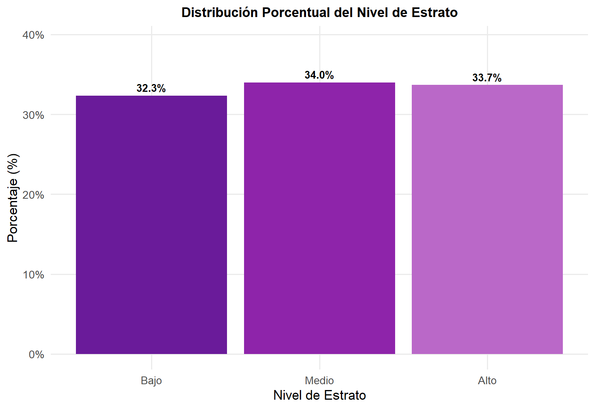
El análisis descriptivo de la variable cualitativa ordinal estrato socioeconómico para la muestra de N = 300 estudiantes de la Licenciatura en Matemáticas de la Universidad del Tolima evidencia una distribución uniforme y equilibrada entre sus tres niveles de clasificación. Al evaluar las frecuencias simples, el estrato medio registra la mayor proporción con un 34.00\% (f_2 = 102, h_2 = 0.3400), seguido de cerca por el estrato alto con un 33.67\% (f_3 = 101, h_3 = 0.3367) y el estrato bajo con un 32.33\% (f_1 = 97, h_1 = 0.3233).
Al analizar la estructura poblacional mediante las frecuencias acumuladas, se observa que el 32.33\% de los evaluados (F_1 = 97, H_1 = 0.3233) pertenece al nivel socioeconómico bajo. Al incorporar el estrato medio, la acumulación señala que aproximadamente dos tercios de la población estudiantil, equivalentes al 66.33\% (F_2 = 199, H_2 = 0.6633), se ubican en una condición socioeconómica media o inferior, dejando el 33.67\% restante en la categoría alta. Esta homogeneidad en la dispersión categórica resulta metodológicamente fundamental, ya que garantiza la ausencia de sesgos por concentración muestral en una única condición socioeconómica, permitiendo contrastar de forma objetiva la influencia del estrato sobre el rendimiento académico, la asistencia y el acceso a tecnologías en las subsecuentes fases del análisis.
Distribución de Frecuencias para la Evaluación del Nivel de Tecnología mediante Métodos Estadísticos Descriptivos en Estudiantes de Licenciatura en Matemáticas de la Universidad del Tolima. Ibagué, Octubre 2026.
Mostrar código
# Crear la tabla original
tabla <- tibble(Tecnología = educacion$Tecnologia) %>%
group_by(Tecnología) %>%
summarise(fi = n()) %>%
mutate(
hi = round(fi/sum(fi), 4),
Porcentaje = paste0(hi*100, "%"),
Fi = cumsum(fi),
Hi = cumsum(hi)
)
# Convertir las columnas Fucion, Fi, y Hi a character para evitar conflictos
tabla <- tabla %>% mutate(
Tecnología = as.character(Tecnología),
Fi = as.character(Fi),
Hi = as.character(Hi)
)
# Añadir la fila de totales, dejando Fi y Hi vacíos
totales <- tibble(
Tecnología = "Total",
fi = sum(tabla$fi),
hi = round(sum(tabla$hi), 4),
Porcentaje = paste0(round(sum(tabla$hi) * 100, 2), "%"),
Fi = "", # Puedes dejar en blanco o usar un valor numérico
Hi = "" # Puedes dejar en blanco o usar un valor numérico
)
# Combinar la tabla con los totales
tabla_final <- bind_rows(tabla, totales)
# Mostrar la tabla final con kable
tabla_final %>%
knitr::kable(
col.names = c("Nivel Tecnología", "fi", "hi", "Porcentaje", "Fi", "Hi"),
align = c("l", "c", "c", "c", "c", "c")
)| Nivel Tecnología | fi | hi | Porcentaje | Fi | Hi |
|---|---|---|---|---|---|
| Bajo | 112 | 0.3733 | 37.33% | 112 | 0.3733 |
| Medio | 108 | 0.3600 | 36% | 220 | 0.7333 |
| Alto | 80 | 0.2667 | 26.67% | 300 | 1 |
| Total | 300 | 1.0000 | 100% |
Mostrar código
# Cargar las librerías necesarias
library(ggplot2)
library(dplyr)
# Calcular los porcentajes de cada categoría en la variable Tecnologia
Tecnologia_counts <- educacion %>%
dplyr::count(Tecnologia) %>%
mutate(porcentaje = n / sum(n) * 100)
# Crear el diagrama de barras
ggplot(Tecnologia_counts, aes(x = Tecnologia, y = porcentaje, fill = Tecnologia)) +
geom_bar(stat = "identity") +
scale_fill_manual(values = c("#6A1B9A", "#8E24AA", "#BA68C8")) +
labs(
title = "Distribución Porcentual del Nivel de Tecnología",
x = "Nivel de Tecnología",
y = "Porcentaje (%)"
) +
scale_y_continuous(
labels = scales::percent_format(scale = 1),
limits = c(0, max(Tecnologia_counts$porcentaje) * 1.15)
) +
geom_text(
aes(label = sprintf("%.1f%%", porcentaje)),
vjust = -0.5,
color = "black",
size = 3.5,
fontface = "bold"
) +
theme_minimal(base_size = 13) +
theme(
plot.title = element_text(hjust = 0.5, face = "bold", size = 13),
panel.grid.minor = element_blank(),
legend.position = "none"
)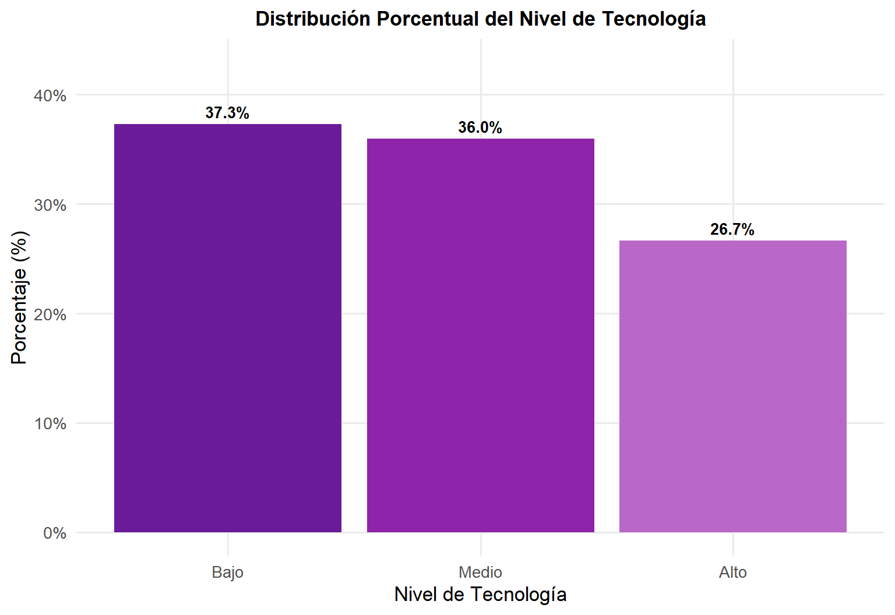
El análisis descriptivo de la variable cualitativa ordinal nivel de tecnología para la muestra de N = 300 estudiantes de la Licenciatura en Matemáticas de la Universidad del Tolima evidencia una concentración predominante en los niveles bajo y medio. Al examinar las frecuencias simples, el nivel bajo presenta la mayor participación con un 37.33\% (f_1 = 112, h_1 = 0.3733), seguido de cerca por el nivel medio con un 36.00\% (f_2 = 108, h_2 = 0.3600), mientras que el nivel alto alcanza únicamente un 26.67\% (f_3 = 80, h_3 = 0.2667).
Al analizar la estructura poblacional mediante las frecuencias acumuladas, se observa que el 37.33\% de los evaluados (F_1 = 112, H_1 = 0.3733) dispone de un nivel tecnológico bajo. Al incorporar la categoría media, el análisis acumulado refleja que el 73.33\% de la población estudiantil (F_2 = 220, H_2 = 0.7333) posee un nivel de acceso o apropiación tecnológica de rango medio o inferior, dejando solo al 26.67\% restante en el nivel alto. Esta marcada asimetría hacia los niveles tecnológicos bajo y medio constituye un hallazgo clave para el estudio, pues sugiere la necesidad de implementar estrategias de alfabetización digital y apoyo tecnológico para optimizar el rendimiento académico en la carrera.
Distribución de Frecuencias para la Evaluación del Nivel de Satisfacción mediante Métodos Estadísticos Descriptivos en Estudiantes de Licenciatura en Matemáticas de la Universidad del Tolima. Ibagué, Octubre 2026.
Mostrar código
# Crear la tabla original
tabla <- tibble(Satisfacción = educacion$Satisfaccion) %>%
group_by(Satisfacción) %>%
summarise(fi = n()) %>%
mutate(
hi = round(fi/sum(fi), 4),
Porcentaje = paste0(hi*100, "%"),
Fi = cumsum(fi),
Hi = cumsum(hi)
)
# Convertir las columnas Fucion, Fi, y Hi a character para evitar conflictos
tabla <- tabla %>% mutate(
Satisfacción = as.character(Satisfacción),
Fi = as.character(Fi),
Hi = as.character(Hi)
)
# Añadir la fila de totales, dejando Fi y Hi vacíos
totales <- tibble(
Satisfacción = "Total",
fi = sum(tabla$fi),
hi = round(sum(tabla$hi), 4),
Porcentaje = paste0(round(sum(tabla$hi) * 100, 2), "%"),
Fi = "", # Puedes dejar en blanco o usar un valor numérico
Hi = "" # Puedes dejar en blanco o usar un valor numérico
)
# Combinar la tabla con los totales
tabla_final <- bind_rows(tabla, totales)
# Mostrar la tabla final con kable
tabla_final %>%
knitr::kable(
col.names = c("Nivel Satisfacción", "fi", "hi", "Porcentaje", "Fi", "Hi"),
align = c("l", "c", "c", "c", "c", "c")
)| Nivel Satisfacción | fi | hi | Porcentaje | Fi | Hi |
|---|---|---|---|---|---|
| Muy baja | 48 | 0.1600 | 16% | 48 | 0.16 |
| Baja | 65 | 0.2167 | 21.67% | 113 | 0.3767 |
| Media | 55 | 0.1833 | 18.33% | 168 | 0.56 |
| Alta | 65 | 0.2167 | 21.67% | 233 | 0.7767 |
| Muy alta | 67 | 0.2233 | 22.33% | 300 | 1 |
| Total | 300 | 1.0000 | 100% |
Mostrar código
# Cargar las librerías necesarias
library(ggplot2)
library(dplyr)
# Calcular los porcentajes de cada categoría en la variable Satisfaccion
Satisfaccion_counts <- educacion %>%
dplyr::count(Satisfaccion) %>%
mutate(porcentaje = n / sum(n) * 100)
# Crear el diagrama de barras
ggplot(Satisfaccion_counts, aes(x = Satisfaccion, y = porcentaje, fill = Satisfaccion)) +
geom_bar(stat = "identity") +
scale_fill_manual(values = c("#4A148C", "#6A1B9A", "#8E24AA", "#AB47BC", "#CE93D8")) +
labs(
title = "Distribución Porcentual del Nivel de Satisfacción",
x = "Nivel de Satisfacción",
y = "Porcentaje (%)"
) +
scale_y_continuous(
labels = scales::percent_format(scale = 1),
limits = c(0, max(Satisfaccion_counts$porcentaje) * 1.15)
) +
geom_text(
aes(label = sprintf("%.1f%%", porcentaje)),
vjust = -0.5,
color = "black",
size = 3.5,
fontface = "bold"
) +
theme_minimal(base_size = 13) +
theme(
plot.title = element_text(hjust = 0.5, face = "bold", size = 13),
panel.grid.minor = element_blank(),
legend.position = "none"
)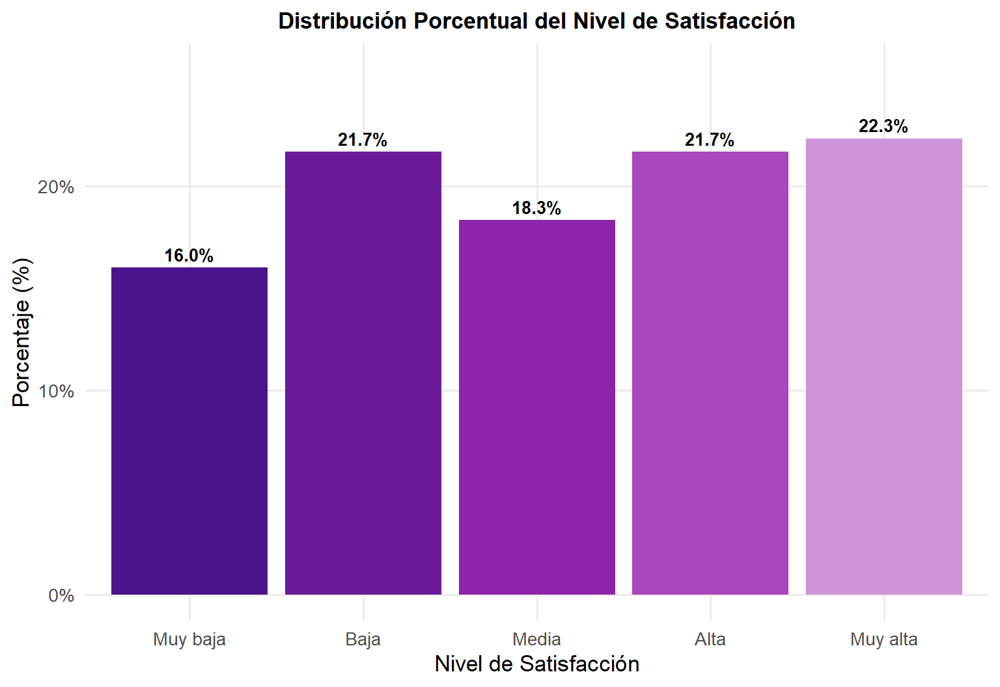
El análisis descriptivo de la variable cualitativa ordinal nivel de satisfacción para la muestra de N = 300 estudiantes de la Licenciatura en Matemáticas de la Universidad del Tolima evidencia una dispersión amplia a lo largo de las cinco categorías evaluadas. En términos de frecuencias simples, la categoría muy alta concentra la mayor proporción con un 22.33\% (f_5 = 67, h_5 = 0.2233), seguida equitativamente por los niveles alta y baja con un 21.67\% cada uno (f_4 = 65, h_4 = 0.2167 y f_2 = 65, h_2 = 0.2167). El nivel medio representa el 18.33\% (f_3 = 55, h_3 = 0.1833), mientras que la categoría muy baja registra la menor participación con un 16.00\% (f_1 = 48, h_1 = 0.1600).
Al examinar el comportamiento acumulado de la variable, se observa que el 16.00\% de los estudiantes (F_1 = 48, H_1 = 0.1600) reporta una satisfacción muy baja. Al incorporar el nivel bajo, el 37.67\% de la población (F_2 = 113, H_2 = 0.3767) percibe un grado de satisfacción bajo o muy bajo. Asimismo, más de la mitad de los evaluados (56.00\%, F_3 = 168, H_3 = 0.5600) se ubica en un nivel de satisfacción medio o inferior. Finalmente, la acumulación hasta el nivel alto alcanza el 77.67\% (F_4 = 233, H_4 = 0.7767), dejando un 22.33\% en la escala superior. Esta variabilidad en la percepción estudiantil sugiere la presencia de factores heterogéneos que inciden en la experiencia académica, constituyendo un insumo determinante para las posteriores pruebas de asociación e inferencia estadística.
5.3 .Variable Discreta
Distribución de Frecuencias para la Evaluación del Número de Cursos Matriculados mediante Métodos Estadísticos Descriptivos en Estudiantes de Licenciatura en Matemáticas de la Universidad del Tolima. Ibagué, Octubre 2026.
Mostrar código
# Crear la tabla original
tabla <- tibble(Cursos = educacion$Cursos) %>%
group_by(Cursos) %>%
summarise(fi = n()) %>%
mutate(
hi = round(fi/sum(fi), 4),
Porcentaje = paste0(hi*100, "%"),
Fi = cumsum(fi),
Hi = cumsum(hi)
)
# Convertir las columnas Personas, Fi, y Hi a character para evitar conflictos
tabla <- tabla %>% mutate(
Cursos = as.character(Cursos),
Fi = as.character(Fi),
Hi = as.character(Hi)
)
# Añadir la fila de totales, dejando Fi y Hi vacíos
totales <- tibble(
Cursos = "Total",
fi = sum(tabla$fi),
hi = round(sum(tabla$hi), 2),
Porcentaje = paste0(round(sum(tabla$hi) * 100, 2), "%"),
Fi = "", # Puedes dejar en blanco o usar un valor numérico
Hi = "" # Puedes dejar en blanco o usar un valor numérico
)
# Combinar la tabla con los totales
tabla_final <- bind_rows(tabla, totales)
# Mostrar la tabla final con kable
tabla_final %>%
knitr::kable(
col.names = c("N Cursos", "fi", "hi", "Porcentaje", "Fi", "Hi"),
align = c("l", "r", "r", "r", "r", "r")
)| N Cursos | fi | hi | Porcentaje | Fi | Hi |
|---|---|---|---|---|---|
| 1 | 41 | 0.1367 | 13.67% | 41 | 0.1367 |
| 2 | 40 | 0.1333 | 13.33% | 81 | 0.27 |
| 3 | 25 | 0.0833 | 8.33% | 106 | 0.3533 |
| 4 | 40 | 0.1333 | 13.33% | 146 | 0.4866 |
| 5 | 37 | 0.1233 | 12.33% | 183 | 0.6099 |
| 6 | 41 | 0.1367 | 13.67% | 224 | 0.7466 |
| 7 | 38 | 0.1267 | 12.67% | 262 | 0.8733 |
| 8 | 38 | 0.1267 | 12.67% | 300 | 1 |
| Total | 300 | 1.0000 | 100% |
Mostrar código
# Valores de la variable
x <- c(1, 2, 3, 4, 5, 6, 7, 8)
# f.m.p.
fx <- c(0.1367, 0.1333, 0.0833, 0.1333, 0.1233, 0.1367, 0.1267, 0.1267)
# Crear dataframe
df <- data.frame(x = x, fx = fx)
# Gráfico con ggplot2
ggplot(df, aes(x = x, y = fx)) +
geom_point(shape = 18, color = "#6A1B9A", size = 3) +
geom_segment(aes(xend = x, yend = 0), size = 1, color = "#BA68C8") +
scale_x_continuous(breaks = df$x) +
scale_y_continuous(limits = c(0, max(df$fx) * 1.25)) +
labs(
title = "Función de Masa de Probabilidad (FMP)",
x = "N Cursos",
y = "Porcentaje"
) +
geom_text(aes(label = sprintf("%.4f", fx)), vjust = -0.7, size = 3.5, fontface = "bold") +
theme_minimal(base_size = 14) +
theme(
plot.title = element_text(face = "bold", hjust = 0.5),
panel.grid.minor = element_blank()
)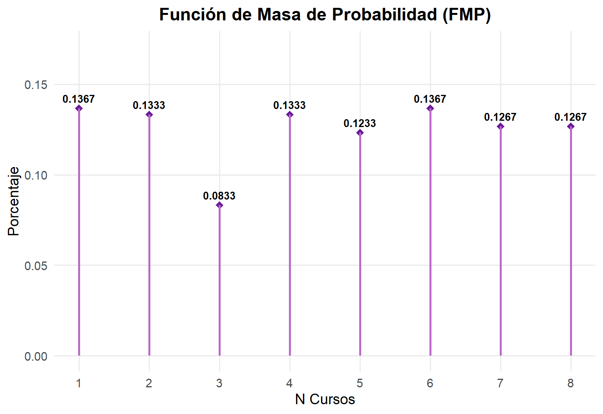
Mostrar código
# Cargar librerías
library(ggplot2)
library(tibble)
# Crear datos
df <- tibble(
x = c(1, 2, 3, 4, 5, 6, 7, 8),
Hi = c(0.1367, 0.27, 0.3533, 0.4866, 0.6099, 0.7466, 0.8733, 1)
)
# Gráfica de función de distribución acumulada
ggplot(df, aes(x = x, y = Hi)) +
geom_step(color = "#6A1B9A", size = 1.2) + # línea escalonada (CDF)
geom_point(color = "#BA68C8", size = 3) + # puntos
scale_x_continuous(breaks = df$x) +
scale_y_continuous(limits = c(0, 1)) +
labs(
title = "Función de Distribución Acumulada (FDA)",
x = "N Cursos",
y = "Frecuencia relativa acumulada (Hi)"
) +
theme_minimal(base_size = 14) +
theme(
plot.title = element_text(face = "bold", hjust = 0.5),
panel.grid.minor = element_blank()
)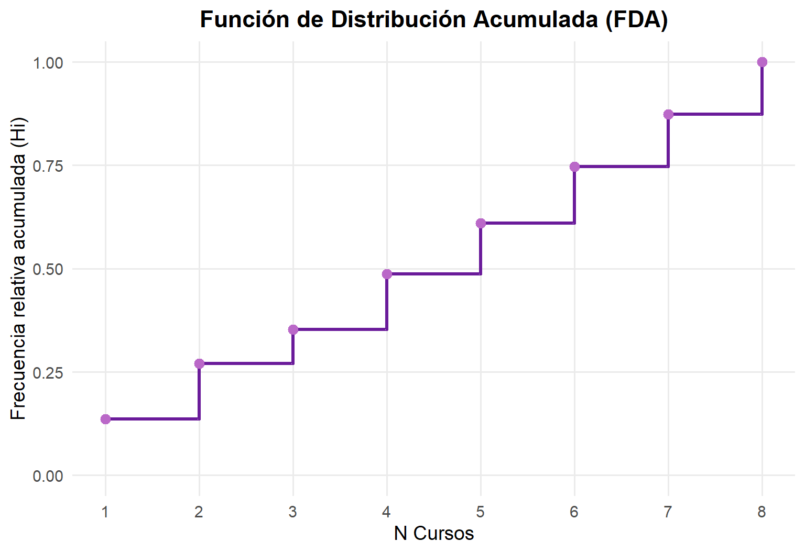
El análisis descriptivo de la variable cuantitativa discreta número de cursos matriculados para la muestra de N = 300 estudiantes de la Licenciatura en Matemáticas de la Universidad del Tolima refleja una distribución amplia e inusualmente homogénea a lo largo del rango de 1 a 8 asignaturas. Al examinar las frecuencias simples, las cargas académicas correspondientes a 1 y 6 cursos registraron la mayor frecuencia absoluta con 41 estudiantes cada una, representando el 13.67\% respectivamente (f_1 = f_6 = 41, h_1 = h_6 = 0.1367). Les siguen en frecuencia los rangos de 2 y 4 cursos con un 13.33\% (f_2 = f_4 = 40, h_2 = h_4 = 0.1333), mientras que las cargas de 7 y 8 cursos alcanzaron el 12.67\% (f_7 = f_8 = 38, h_7 = h_8 = 0.1267) y 5 cursos el 12.33\% (f_5 = 37, h_5 = 0.1233). La menor participación se presentó en la categoría de 3 cursos con un 8.33\% (f_3 = 25, h_3 = 0.0833).
Al analizar la estructura de la carga académica mediante las frecuencias acumuladas, se evidencia que el 35.33\% de los evaluados (F_3 = 106, H_3 = 0.3533) cursa un nivel de carga baja de hasta 3 asignaturas. Al fijar el umbral en una carga intermedia, se observa que cerca de la mitad de la población estudiantil, equivalente al 48.66\% (F_4 = 146, H_4 = 0.4866), se encuentra matriculada en 4 cursos o menos. Por su parte, la acumulación hasta 6 cursos alcanza el 74.66\% (F_6 = 224, H_6 = 0.7466), lo que demuestra que aproximadamente tres cuartas partes de los estudiantes cursan hasta 6 asignaturas, dejando solo al 25.34\% restante con una carga alta de 7 u 8 materias. Esta amplia dispersión en la cantidad de asignaturas inscritas resulta metodológicamente relevante para evaluar cómo la intensidad de la carga académica condiciona el nivel de satisfacción y el rendimiento académico en las etapas analíticas posteriores del estudio.
5.4 .Variable Continua
Análisis Estadístico Descriptivo de la Variable Cuantitativa Continua: Horas de Estudio
Mostrar código
Min <- min(educacion$Horas)
Min[1] 1.23Mostrar código
Max <- max(educacion$Horas)
Max[1] 29.98Mostrar código
R <- Max-Min
R[1] 28.75Mostrar código
m <- ceiling(1 + 3.322*log10(nrow(educacion)))
m[1] 10Mostrar código
d <- 2 # Número de decimales de la variable
A <- ceiling((R / m) * 10^d) / 10^d
A[1] 2.88Mostrar código
RC <- A*m
RC[1] 28.8Mostrar código
D <- RC-R
D[1] 0.05Mostrar código
Xmin <- Min-0.025
Xmin[1] 1.205Mostrar código
Xmax <- Max+0.025
Xmax[1] 30.005Distribución de Frecuencias para la Evaluación del Número de Horas Dedicadas al Estudio mediante Métodos Estadísticos Descriptivos en Estudiantes de Licenciatura en Matemáticas de la Universidad del Tolima. Ibagué, Octubre 2026.
Mostrar código
library(dplyr)
library(kableExtra)
m1 <- (Xmin+(Xmin+A))/2
interv = cut(x = educacion$Horas, breaks = seq(Xmin, Xmax, by = A), include.lowest = TRUE)
tabla <- tibble(Horas = interv) %>%
group_by(Horas) %>%
summarise(fi = n()) %>%
mutate(hi = fi / sum(fi)) %>%
mutate(
mi = seq(m1, by = A, length.out = n()) %>% as.character(),
Fi = cumsum(fi) %>% as.character(),
Hi = cumsum(fi / sum(fi)) %>% as.character()
) %>%
relocate(Horas, mi, fi)
# Agregar la fila total con casillas en blanco
tabla <- tabla %>%
add_row(Horas = "Total", mi = "", fi = sum(tabla$fi), hi = sum(tabla$hi), Fi = "", Hi = "")
# Generar la tabla con knitr::kable y agregar título
tabla %>%
knitr::kable(
col.names = c("Horas", "mi", "fi", "hi", "Fi", "Hi"),
align = c("l", "r", "r", "r", "r", "r")
) %>%
kableExtra::kable_styling(full_width = FALSE) %>%
kableExtra::add_header_above(c("Distribuciones de frecuencias para la variable Horas" = 6))| Horas | mi | fi | hi | Fi | Hi |
|---|---|---|---|---|---|
| [1.21,4.08] | 2.645 | 23 | 0.0766667 | 23 | 0.0766666666666667 |
| (4.08,6.96] | 5.525 | 27 | 0.0900000 | 50 | 0.166666666666667 |
| (6.96,9.85] | 8.405 | 29 | 0.0966667 | 79 | 0.263333333333333 |
| (9.85,12.7] | 11.285 | 22 | 0.0733333 | 101 | 0.336666666666667 |
| (12.7,15.6] | 14.165 | 29 | 0.0966667 | 130 | 0.433333333333333 |
| (15.6,18.5] | 17.045 | 29 | 0.0966667 | 159 | 0.53 |
| (18.5,21.4] | 19.925 | 40 | 0.1333333 | 199 | 0.663333333333333 |
| (21.4,24.2] | 22.805 | 34 | 0.1133333 | 233 | 0.776666666666667 |
| (24.2,27.1] | 25.685 | 34 | 0.1133333 | 267 | 0.89 |
| (27.1,30] | 28.565 | 33 | 0.1100000 | 300 | 1 |
| Total | 300 | 1.0000000 |
Mostrar código
library(ggplot2)
# Histograma para la variable Horas
ggplot(educacion, aes(x = Horas, fill = cut(Horas, breaks = seq(Xmin, Xmax, by = A), right = FALSE))) +
geom_histogram(
breaks = seq(Xmin, Xmax, by = A),
color = "white",
closed = "left"
) +
# 10 Colores exactos para los 10 intervalos
scale_fill_manual(values = c(
"#2A0845", "#311B92", "#4A148C", "#6A1B9A", "#7B1FA2",
"#8E24AA", "#AB47BC", "#BA68C8", "#CE93D8", "#E1BEE7"
)) +
scale_x_continuous(breaks = seq(Xmin, Xmax, by = A)) +
labs(
title = "Distribución de Frecuencias para la Variable Horas",
x = "Horas",
y = "Frecuencia absoluta (fi)"
) +
theme_minimal(base_size = 13) +
theme(
legend.position = "none",
plot.title = element_text(hjust = 0.5, face = "bold"), # Título negro en negrita
panel.grid.minor = element_blank()
)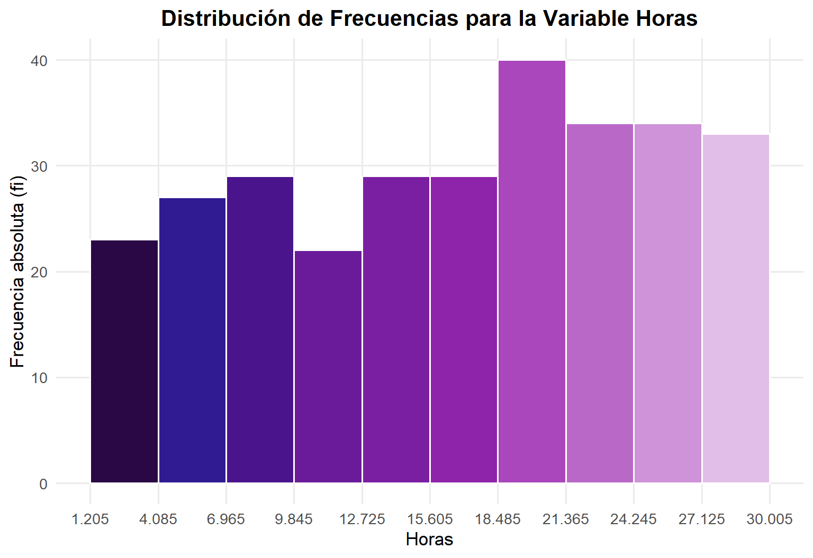
Mostrar código
library(dplyr)
library(ggplot2)
library(tibble)
# 1. Construir la tabla de intervalos y frecuencias acumuladas para Horas
horas_ojiva <- tibble(
ls = seq(Xmin + A, Xmax, by = A)
) %>%
rowwise() %>%
mutate(
fi = sum(educacion$Horas >= (ls - A) & educacion$Horas < ls)
) %>%
ungroup() %>%
mutate(
Fi = cumsum(fi),
Hi = Fi / sum(fi)
)
# 2. Agregar el punto de origen (frecuencia 0 en Xmin) para cerrar la ojiva desde el eje X
horas_ojiva <- bind_rows(
tibble(ls = Xmin, fi = 0, Fi = 0, Hi = 0),
horas_ojiva
)
# 3. Graficar la ojiva
ggplot(horas_ojiva, aes(x = ls, y = Hi)) +
geom_line(color = "#8E24AA", size = 1) +
geom_point(color = "#4A148C", size = 2.5) +
labs(
title = "Ojiva de Frecuencia Acumulada Relativa para la Variable Horas",
x = "Horas (Límite superior del intervalo)",
y = "Frecuencia Relativa Acumulada (Hi)"
) +
scale_y_continuous(labels = scales::percent, limits = c(0, 1)) +
scale_x_continuous(breaks = seq(Xmin, Xmax, by = A)) +
theme_minimal(base_size = 13) +
theme(
plot.title = element_text(hjust = 0.5, face = "bold"),
panel.grid.minor = element_blank()
)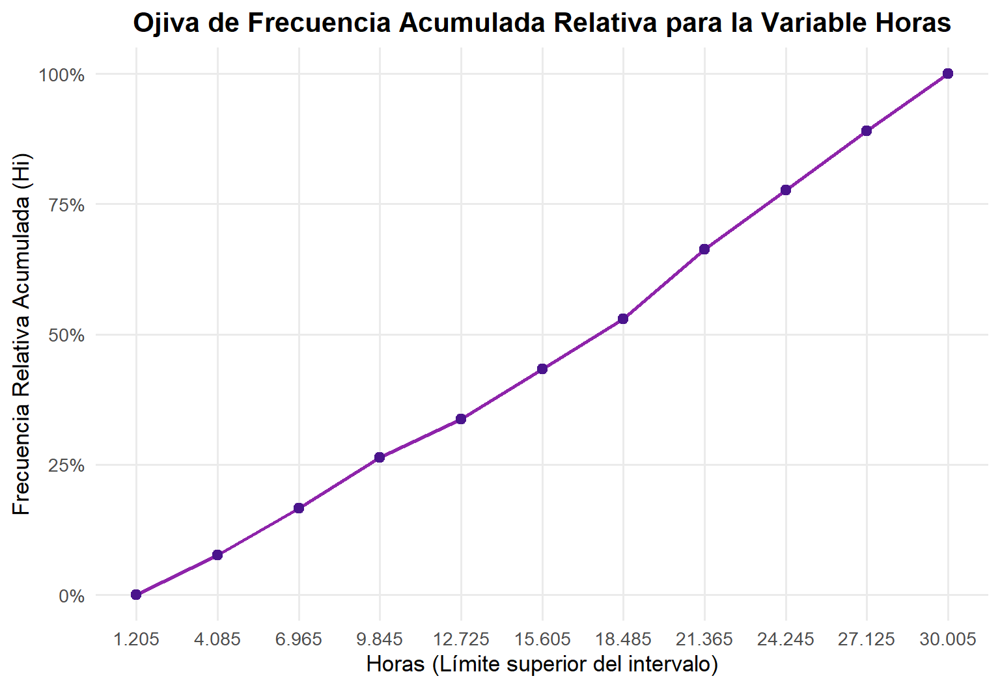
Mostrar código
library(ggplot2)
# Gráfico de densidad para la variable Horas
ggplot(educacion, aes(x = Horas)) +
geom_density(
fill = rgb(142/255, 36/255, 170/255, alpha = 0.4), # Morado transparente
color = "#8E24AA", # Borde morado principal
linewidth = 1.2
) +
scale_x_continuous(breaks = seq(Xmin, Xmax, by = A)) +
labs(
title = "Curva de Densidad para la Variable Horas",
x = "Horas",
y = "Densidad"
) +
theme_minimal(base_size = 13) +
theme(
plot.title = element_text(hjust = 0.5, face = "bold"),
panel.grid.minor = element_blank()
)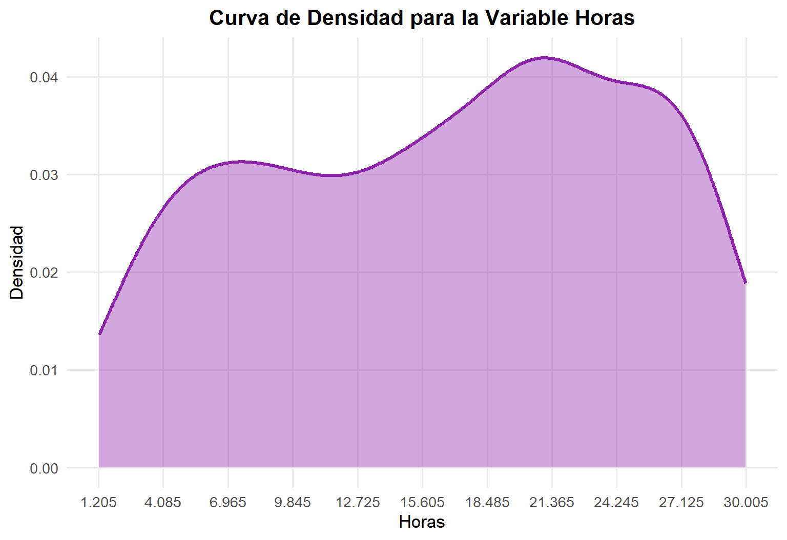
El análisis descriptivo de la variable cuantitativa continua horas dedique al estudio para la muestra de N = 300 estudiantes de la Licenciatura en Matemáticas de la Universidad del Tolima evidencia una distribución agrupada en 10 intervalos de clase de amplitud A = 2.87 horas. Al examinar las frecuencias simples, la mayor concentración de la población se registra en el intervalo de (18.5, 21.4] horas con un 13.33\% (f_7 = 40, h_7 = 0.1333). Les siguen en frecuencia los intervalos de (21.4, 24.2] y (24.2, 27.1] horas, cada uno con un 11.33\% (f_8 = f_9 = 34, h_8 = h_9 = 0.1133), así como el último intervalo de (27.1, 30] horas con un 11.00\% (f_{10} = 33, h_{10} = 0.1100). Por su parte, la menor participación se observa en el intervalo de (9.85, 12.7] horas con un 7.33\% (f_4 = 22, h_4 = 0.0733) y en el primer intervalo de [1.21, 4.08] horas con un 7.67\% (f_1 = 23, h_1 = 0.0767).
Al evaluar la estructura de la variable mediante las frecuencias acumuladas, se determina que el 26.33\% de los evaluados (F_3 = 79, H_3 = 0.2633) dedica 9.85 horas o menos al estudio semanal. Al avanzar hacia una dedicación intermedia, se observa que más de la mitad de la población estudiantil, correspondiente al 53.00\% (F_6 = 159, H_6 = 0.5300), destina 18.5 horas o menos, lo que marca el punto medio aproximado de la distribución. Asimismo, la acumulación hasta el intervalo de (21.4, 24.2] horas alcanza el 77.67\% (F_8 = 233, H_8 = 0.7767), mientras que el 89.00\% (F_9 = 267, H_9 = 0.8900) estudia 27.1 horas o menos, dejando únicamente un 11.00\% restante en el rango superior de más de 27.1 horas. Esta progresión acumulada refleja una dedicación académica sostenida hacia el rango medio-alto de la distribución, insumo fundamental para correlacionar el tiempo de estudio con la carga académica y el promedio académico obtenido.
Análisis Estadístico Descriptivo de la Variable Cuantitativa Continua: Promedio Académico
Mostrar código
Min <- min(educacion$Promedio)
Min[1] 1.03Mostrar código
Max <- max(educacion$Promedio)
Max[1] 4.99Mostrar código
R <- Max-Min
R[1] 3.96Mostrar código
m <- ceiling(1 + 3.322*log10(nrow(educacion)))
m[1] 10Mostrar código
d <- 2 # Número de decimales de la variable
A <- ceiling((R / m) * 10^d) / 10^d
A[1] 0.4Mostrar código
RC <- A*m
RC[1] 4Mostrar código
D <- RC-R
D[1] 0.04Mostrar código
Xmin <- Min-0.02
Xmin[1] 1.01Mostrar código
Xmax <- Max+0.02
Xmax[1] 5.01Distribución de Frecuencias para la Evaluación del Promedio Académico acumulado mediante Métodos Estadísticos Descriptivos en Estudiantes de Licenciatura en Matemáticas de la Universidad del Tolima. Ibagué, Octubre 2026.
Mostrar código
library(dplyr)
library(kableExtra)
m1 <- (Xmin+(Xmin+A))/2
interv = cut(x = educacion$Promedio, breaks = seq(Xmin, Xmax, by = A), include.lowest = TRUE)
tabla <- tibble(Promedio = interv) %>%
group_by(Promedio) %>%
summarise(fi = n()) %>%
mutate(hi = fi / sum(fi)) %>%
mutate(
mi = seq(m1, by = A, length.out = n()) %>% as.character(),
Fi = cumsum(fi) %>% as.character(),
Hi = cumsum(fi / sum(fi)) %>% as.character()
) %>%
relocate(Promedio, mi, fi)
# Agregar la fila total con casillas en blanco
tabla <- tabla %>%
add_row(Promedio = "Total", mi = "", fi = sum(tabla$fi), hi = sum(tabla$hi), Fi = "", Hi = "")
# Generar la tabla con knitr::kable y agregar título
tabla %>%
knitr::kable(
col.names = c("Promedio", "mi", "fi", "hi", "Fi", "Hi"),
align = c("l", "r", "r", "r", "r", "r")
) %>%
kableExtra::kable_styling(full_width = FALSE) %>%
kableExtra::add_header_above(c("Distribuciones de frecuencias para la variable Promedio" = 6))| Promedio | mi | fi | hi | Fi | Hi |
|---|---|---|---|---|---|
| [1.01,1.41] | 1.21 | 28 | 0.0933333 | 28 | 0.0933333333333333 |
| (1.41,1.81] | 1.61 | 30 | 0.1000000 | 58 | 0.193333333333333 |
| (1.81,2.21] | 2.01 | 32 | 0.1066667 | 90 | 0.3 |
| (2.21,2.61] | 2.41 | 17 | 0.0566667 | 107 | 0.356666666666667 |
| (2.61,3.01] | 2.81 | 35 | 0.1166667 | 142 | 0.473333333333333 |
| (3.01,3.41] | 3.21 | 37 | 0.1233333 | 179 | 0.596666666666667 |
| (3.41,3.81] | 3.61 | 29 | 0.0966667 | 208 | 0.693333333333333 |
| (3.81,4.21] | 4.01 | 35 | 0.1166667 | 243 | 0.81 |
| (4.21,4.61] | 4.41 | 25 | 0.0833333 | 268 | 0.893333333333333 |
| (4.61,5.01] | 4.81 | 32 | 0.1066667 | 300 | 1 |
| Total | 300 | 1.0000000 |
Mostrar código
# Librerías
library(ggplot2)
library(dplyr)
# Dataframe construido directamente con los valores de la tabla
promedio_datos <- data.frame(
li = c(1.01, 1.41, 1.81, 2.21, 2.61, 3.01, 3.41, 3.81, 4.21, 4.61),
ls = c(1.41, 1.81, 2.21, 2.61, 3.01, 3.41, 3.81, 4.21, 4.61, 5.01),
fi = c(28, 30, 32, 17, 35, 37, 29, 35, 25, 32)
)
# Histograma con geom_rect
ggplot(promedio_datos) +
geom_rect(
aes(
xmin = li,
xmax = ls,
ymin = 0,
ymax = fi,
fill = as.factor(li) # <--- Esto separa cada barra por color
),
color = "white" # Bordes blancos limpios entre barras
) +
# Los 10 colores en gama de morados para tus 10 barras:
scale_fill_manual(values = c(
"#2A0845", "#311B92", "#4A148C", "#6A1B9A", "#7B1FA2",
"#8E24AA", "#AB47BC", "#BA68C8", "#CE93D8", "#E1BEE7"
)) +
scale_x_continuous(
breaks = c(promedio_datos$li, max(promedio_datos$ls))
) +
labs(
title = "Histograma de Frecuencias para la Variable Promedio Académico",
x = "Promedio Académico",
y = "Frecuencia absoluta (fi)"
) +
theme_minimal(base_size = 13) +
theme(
legend.position = "none", # <--- ESTO ELIMINA LAS CONVENCIONES
plot.title = element_text(hjust = 0.5, face = "bold"),
panel.grid.minor = element_blank()
)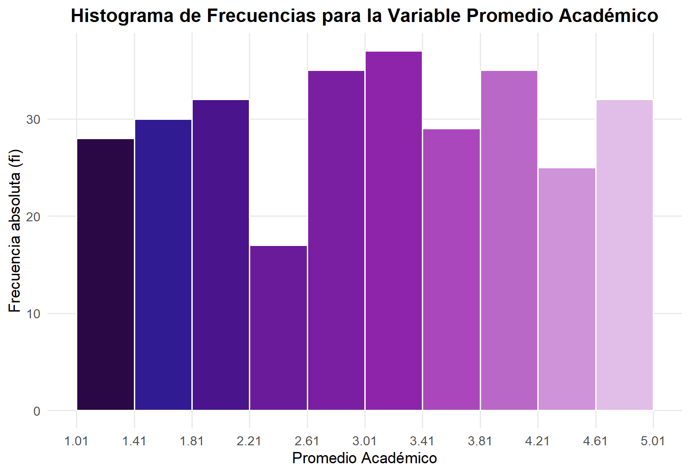
Mostrar código
# Librerías
library(dplyr)
library(ggplot2)
library(tibble)
# Dataframe construido directamente con los valores de la tabla de Promedio
promedio_ojiva <- tibble(
li = c(1.01, 1.41, 1.81, 2.21, 2.61, 3.01, 3.41, 3.81, 4.21, 4.61),
ls = c(1.41, 1.81, 2.21, 2.61, 3.01, 3.41, 3.81, 4.21, 4.61, 5.01),
fi = c(28, 30, 32, 17, 35, 37, 29, 35, 25, 32)
)
# Calcular frecuencias acumuladas
promedio_ojiva <- promedio_ojiva %>%
mutate(
Fi = cumsum(fi),
Hi = Fi / sum(fi)
)
# Agregar el punto inicial (frecuencia 0 en el límite inferior inicial 1.01) para anclar la ojiva al eje X
promedio_ojiva <- bind_rows(
tibble(li = 1.01, ls = 1.01, fi = 0, Fi = 0, Hi = 0),
promedio_ojiva
)
# Graficar la ojiva
ggplot(promedio_ojiva, aes(x = ls, y = Hi)) +
geom_line(color = "#8E24AA", size = 1) +
geom_point(color = "#4A148C", size = 2.5) +
labs(
title = "Ojiva de Frecuencia Acumulada: Promedio Académico",
x = "Promedio Académico (Límite superior del intervalo)",
y = "Frecuencia Relativa Acumulada (Hi)"
) +
scale_y_continuous(labels = scales::percent, limits = c(0, 1)) +
scale_x_continuous(breaks = promedio_ojiva$ls) +
theme_minimal(base_size = 13) +
theme(
plot.title = element_text(hjust = 0.5, face = "bold"),
panel.grid.minor = element_blank(),
axis.text.x = element_text(angle = 45, hjust = 1)
)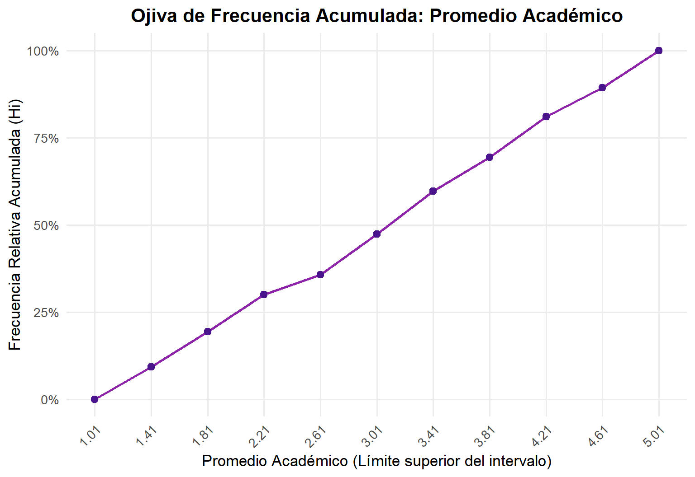
Mostrar código
# Librerías
library(dplyr)
library(ggplot2)
# Dataframe con las marcas de clase (mi) y frecuencias (fi) de la tabla de Promedio
promedio_densidad <- data.frame(
mi = c(1.21, 1.61, 2.01, 2.41, 2.81, 3.21, 3.61, 4.01, 4.41, 4.81),
fi = c(28, 30, 32, 17, 35, 37, 29, 35, 25, 32)
)
# Expandir la serie de datos según la frecuencia de cada marca de clase
promedio_expandido <- promedio_densidad %>%
slice(rep(1:n(), fi))
# Opción 1: En ggplot2 (Alineado con el estilo moderno de tu informe)
ggplot(promedio_expandido, aes(x = mi)) +
geom_density(
fill = rgb(142/255, 36/255, 170/255, alpha = 0.4), # Morado semitransparente
color = "#8E24AA", # Borde morado principal
linewidth = 1.2
) +
scale_x_continuous(breaks = promedio_densidad$mi) +
labs(
title = "Curva de Densidad para la Variable Promedio Académico",
x = "Promedio Académico (Marcas de clase)",
y = "Densidad"
) +
theme_minimal(base_size = 13) +
theme(
plot.title = element_text(hjust = 0.5, face = "bold"),
panel.grid.minor = element_blank()
)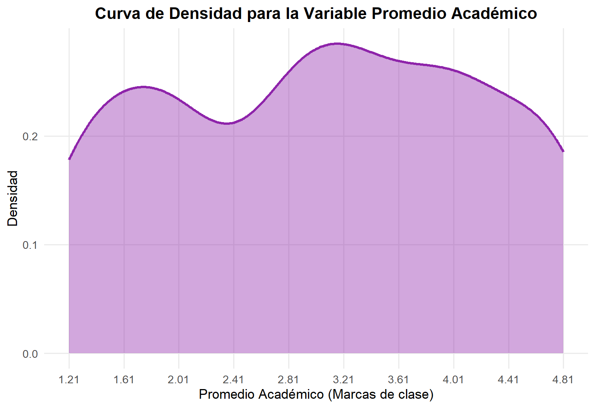
El análisis descriptivo de la variable cuantitativa continua promedio académico para la muestra de N = 300 estudiantes de la Licenciatura en Matemáticas de la Universidad del Tolima evidencia una distribución organizada en 10 intervalos de clase de amplitud A = 0.40. Al examinar las frecuencias simples, la mayor representación estudiantil se concentra en el intervalo de (3.01, 3.41] con un 12.33\% (f_6 = 37, h_6 = 0.1233), seguido muy de cerca por los intervalos de (2.61, 3.01] y (3.81, 4.21], cada uno con un 11.67\% de la población (f_5 = f_8 = 35, h_5 = h_8 = 0.1167). Asimismo, los intervalos de (1.81, 2.21] y (4.61, 5.01] registraron un 10.67\% respectivamente (f_3 = f_{10} = 32, h_3 = h_{10} = 0.1067). Por el contrario, la menor concentración se observa en el intervalo de (2.21, 2.61] con tan solo el 5.67\% (f_4 = 17, h_4 = 0.0567) y en el rango de (4.21, 4.61] con el 8.33\% (f_9 = 25, h_9 = 0.0833).
Al analizar el comportamiento mediante las frecuencias acumuladas, se determina que el 30.00\% de los evaluados (F_3 = 90, H_3 = 0.3000) presenta un promedio académico en un rango crítico de 2.21 o menos. Al evaluar el umbral de rendimiento medio, se observa que cerca del 60\% de la población estudiantil, correspondiente al 59.67\% (F_6 = 179, H_6 = 0.5967), obtiene una calificación acumulada de 3.41 o inferior. Por su parte, la acumulación hasta el intervalo de (3.81, 4.21] alcanza el 81.00\% (F_8 = 243, H_8 = 0.8100), lo que demuestra que un 19.00\% de los estudiantes logra posicionarse en el rango superior con promedios por encima de 4.21. Esta dispersión multimodal del rendimiento académico resulta fundamental para analizar en posteriores cruces estadísticos cómo variables como la carga horaria semanal y el número de asignaturas inscritas condicionan directamente el éxito académico del estudiantado.
Análisis Estadístico Descriptivo de la Variable Cuantitativa Continua: Porcentaje de Asistencia
Mostrar código
Min <- min(educacion$`Asistencia (%)`)
Min[1] 50.17Mostrar código
Max <- max(educacion$`Asistencia (%)`)
Max[1] 99.74Mostrar código
R <- Max-Min
R[1] 49.57Mostrar código
m <- ceiling(1 + 3.322*log10(nrow(educacion)))
m[1] 10Mostrar código
d <- 2 # Número de decimales de la variable
A <- ceiling((R / m) * 10^d) / 10^d
A[1] 4.96Mostrar código
RC <- A*m
RC[1] 49.6Mostrar código
D <- RC-R
D[1] 0.03Mostrar código
Xmin <- Min-0.015
Xmin[1] 50.155Mostrar código
Xmax <- Max+0.015
Xmax[1] 99.755Distribución de Frecuencias para la Evaluación del Porcentaje de Asistencia a Clase mediante Métodos Estadísticos Descriptivos en Estudiantes de Licenciatura en Matemáticas de la Universidad del Tolima. Ibagué, Octubre 2026.
Mostrar código
library(dplyr)
library(kableExtra)
m1 <- (Xmin+(Xmin+A))/2
interv = cut(x = educacion$`Asistencia (%)`, breaks = seq(Xmin, Xmax, by = A), include.lowest = TRUE)
tabla <- tibble(Asistencia = interv) %>%
group_by(Asistencia) %>%
summarise(fi = n()) %>%
mutate(hi = fi / sum(fi)) %>%
mutate(
mi = seq(m1, by = A, length.out = n()) %>% as.character(),
Fi = cumsum(fi) %>% as.character(),
Hi = cumsum(fi / sum(fi)) %>% as.character()
) %>%
relocate(Asistencia, mi, fi)
# Agregar la fila total con casillas en blanco
tabla <- tabla %>%
add_row(Asistencia = "Total", mi = "", fi = sum(tabla$fi), hi = sum(tabla$hi), Fi = "", Hi = "")
# Generar la tabla con knitr::kable y agregar título
tabla %>%
knitr::kable(
col.names = c("Asistencia", "mi", "fi", "hi", "Fi", "Hi"),
align = c("l", "r", "r", "r", "r", "r")
) %>%
kableExtra::kable_styling(full_width = FALSE) %>%
kableExtra::add_header_above(c("Distribuciones de frecuencias para la variable Asistencia" = 6))| Asistencia | mi | fi | hi | Fi | Hi |
|---|---|---|---|---|---|
| [50.2,55.1] | 52.635 | 38 | 0.1266667 | 38 | 0.126666666666667 |
| (55.1,60.1] | 57.595 | 33 | 0.1100000 | 71 | 0.236666666666667 |
| (60.1,65] | 62.555 | 30 | 0.1000000 | 101 | 0.336666666666667 |
| (65,70] | 67.515 | 24 | 0.0800000 | 125 | 0.416666666666667 |
| (70,75] | 72.475 | 22 | 0.0733333 | 147 | 0.49 |
| (75,79.9] | 77.435 | 14 | 0.0466667 | 161 | 0.536666666666667 |
| (79.9,84.9] | 82.395 | 38 | 0.1266667 | 199 | 0.663333333333333 |
| (84.9,89.8] | 87.355 | 27 | 0.0900000 | 226 | 0.753333333333333 |
| (89.8,94.8] | 92.315 | 39 | 0.1300000 | 265 | 0.883333333333333 |
| (94.8,99.8] | 97.275 | 35 | 0.1166667 | 300 | 1 |
| Total | 300 | 1.0000000 |
Mostrar código
# Librerías
library(ggplot2)
library(dplyr)
# 1. Definir el dataframe dentro del mismo chunk
asistencia_datos <- data.frame(
li = c(50.2, 55.1, 60.1, 65.0, 70.0, 75.0, 79.9, 84.9, 89.8, 94.8),
ls = c(55.1, 60.1, 65.0, 70.0, 75.0, 79.9, 84.9, 89.8, 94.8, 99.8),
fi = c(38, 33, 30, 24, 22, 14, 38, 27, 39, 35)
)
# 2. Histograma con geom_rect
ggplot(asistencia_datos) +
geom_rect(
aes(
xmin = li,
xmax = ls,
ymin = 0,
ymax = fi,
fill = as.factor(li)
),
color = "white"
) +
scale_fill_manual(values = c(
"#2A0845", "#311B92", "#4A148C", "#6A1B9A", "#7B1FA2",
"#8E24AA", "#AB47BC", "#BA68C8", "#CE93D8", "#E1BEE7"
)) +
scale_x_continuous(
breaks = c(asistencia_datos$li, max(asistencia_datos$ls))
) +
labs(
title = "Histograma de Frecuencias para la Variable Porcentaje de Asistencia",
x = "Porcentaje de Asistencia (%)",
y = "Frecuencia absoluta (fi)",
fill = "Límite inf."
) +
theme_minimal(base_size = 13) +
theme(
plot.title = element_text(hjust = 0.5, face = "bold"),
panel.grid.minor = element_blank(),
axis.text.x = element_text(angle = 45, hjust = 1),
legend.position = "none"
)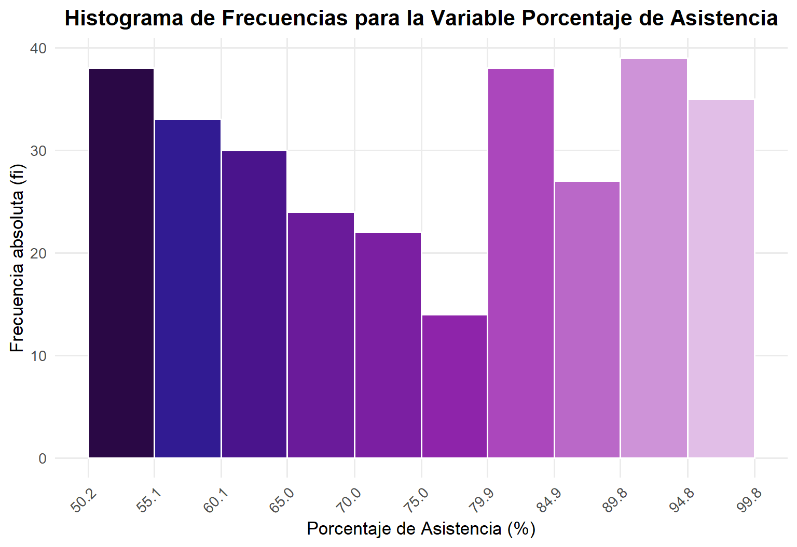
Mostrar código
# Librerías
library(dplyr)
library(ggplot2)
library(tibble)
# Dataframe con los datos exactos de la tabla de Asistencia
asistencia_ojiva <- tibble(
li = c(50.2, 55.1, 60.1, 65.0, 70.0, 75.0, 79.9, 84.9, 89.8, 94.8),
ls = c(55.1, 60.1, 65.0, 70.0, 75.0, 79.9, 84.9, 89.8, 94.8, 99.8),
fi = c(38, 33, 30, 24, 22, 14, 38, 27, 39, 35)
)
# Calcular frecuencias acumuladas
asistencia_ojiva <- asistencia_ojiva %>%
mutate(
Fi = cumsum(fi),
Hi = Fi / sum(fi)
)
# Anclar la ojiva al origen en el primer límite inferior (50.2 con frecuencia 0)
asistencia_ojiva <- bind_rows(
tibble(li = 50.2, ls = 50.2, fi = 0, Fi = 0, Hi = 0),
asistencia_ojiva
)
# Graficar Ojiva
ggplot(asistencia_ojiva, aes(x = ls, y = Hi)) +
geom_line(color = "#8E24AA", linewidth = 1) +
geom_point(color = "#4A148C", size = 2.5) +
labs(
title = "Ojiva de Frecuencia Acumulada: Asistencia",
x = "Porcentaje de Asistencia (%) (Límite superior del intervalo)",
y = "Frecuencia Relativa Acumulada (Hi)"
) +
scale_y_continuous(labels = scales::percent, limits = c(0, 1)) +
scale_x_continuous(breaks = asistencia_ojiva$ls) +
theme_minimal(base_size = 13) +
theme(
plot.title = element_text(hjust = 0.5, face = "bold"),
panel.grid.minor = element_blank(),
axis.text.x = element_text(angle = 45, hjust = 1)
)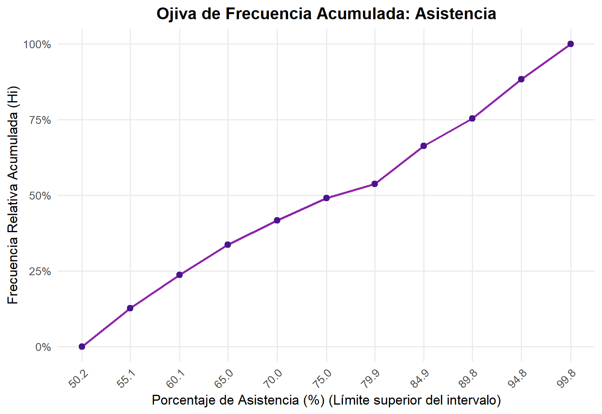
Mostrar código
# Librerías
library(dplyr)
library(ggplot2)
# Dataframe con las marcas de clase (mi) y frecuencias (fi) de la tabla de Asistencia
asistencia_densidad <- data.frame(
mi = c(52.635, 57.595, 62.555, 67.515, 72.475, 77.435, 82.395, 87.355, 92.315, 97.275),
fi = c(38, 33, 30, 24, 22, 14, 38, 27, 39, 35)
)
# Expandir la serie de datos según la frecuencia de cada marca de clase
asistencia_expandida <- asistencia_densidad %>%
slice(rep(1:n(), fi))
# Opción 1: En ggplot2 (Alineado con el estilo moderno de tu informe)
ggplot(asistencia_expandida, aes(x = mi)) +
geom_density(
fill = rgb(142/255, 36/255, 170/255, alpha = 0.4), # Morado semitransparente
color = "#8E24AA", # Borde morado principal
linewidth = 1.2
) +
scale_x_continuous(breaks = asistencia_densidad$mi) +
labs(
title = "Curva de Densidad para la Variable Porcentaje de Asistencia",
x = "Porcentaje de Asistencia (%) (Marcas de clase)",
y = "Densidad"
) +
theme_minimal(base_size = 13) +
theme(
plot.title = element_text(hjust = 0.5, face = "bold"),
panel.grid.minor = element_blank(),
axis.text.x = element_text(angle = 45, hjust = 1)
)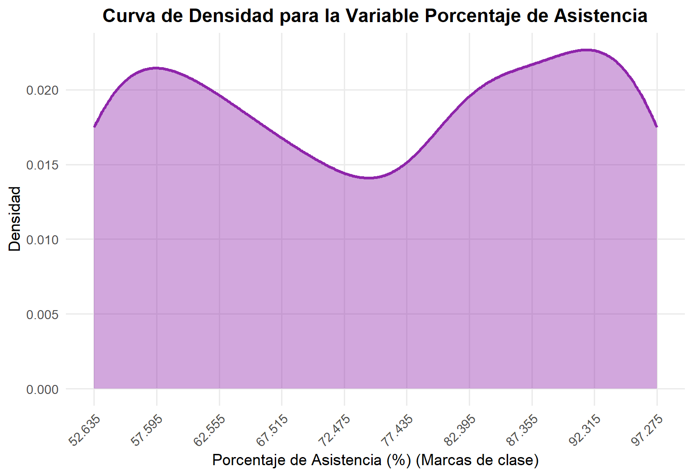
El análisis descriptivo de la variable cuantitativa continua porcentaje de asistencia para la muestra de N = 300 estudiantes de la Licenciatura en Matemáticas de la Universidad del Tolima evidencia una distribución agrupada en 10 intervalos de clase de amplitud A = 4.90\%. Al examinar las frecuencias simples, se observa un comportamiento bimodal destacándose dos picos principales de concentración: el noveno intervalo de (89.8, 94.8]\% con el 13.00\% (f_9 = 39, h_9 = 0.1300) y, de manera simultánea, el primer intervalo de [50.2, 55.1]\% junto al séptimo de (79.9, 84.9]\%, alcanzando cada uno el 12.67\% de la población (f_1 = f_7 = 38, h_1 = h_7 = 0.1267). Les sigue el último rango de (94.8, 99.8]\% con un 11.67\% (f_{10} = 35, h_{10} = 0.1167). Por el contrario, la menor participación estudiantil se registra en el intervalo de (75, 79.9]\% con tan solo el 4.67\% (f_6 = 14, h_6 = 0.0467) y en el rango de (70, 75]\% con el 7.33\% (f_5 = 22, h_5 = 0.0733).
Al evaluar la estructura de la variable mediante las frecuencias acumuladas, se determina que el 33.67\% de los estudiantes (F_3 = 101, H_3 = 0.3367) registra una asistencia igual o inferior al 65.0\%. Al avanzar hacia el punto medio de la distribución, se aprecia que un 53.67\% de la población estudiantil (F_6 = 161, H_6 = 0.5367) asiste en un 79.9\% o menos a sus actividades académicas. En contraste, el 46.33\% restante de los estudiantes demuestra una asistencia superior al 79.9\%, logrando que el 24.67\% del total se ubique en los rangos de excelencia con asistencias por encima del 89.8\%. Esta polarización en el compromiso presencial resulta un factor determinante para evaluar su impacto directo sobre el rendimiento académico y las horas de estudio independiente.
5.5 .Tablas de contingencia
Mostrar código
# Cargar las bibliotecas necesarias
library(dplyr)
library(kableExtra)
# Crear la tabla de contingencia entre Nivel y Tecnología
tabla_nivel_tecnologia <- table(educacion$Nivel_Educativo, educacion$Tecnologia)
# Convertir la tabla a un data frame
tabla_df <- as.data.frame.matrix(tabla_nivel_tecnologia)
# Calcular los totales por fila (frecuencia absoluta por Nivel)
tabla_df$Total <- rowSums(tabla_df)
# Calcular el total general de la muestra
total_fi <- sum(tabla_df$Total)
# Añadir la fila de Totales al final de la tabla
tabla_df <- rbind(tabla_df, Total = c(colSums(tabla_nivel_tecnologia), total_fi))
# Generar la tabla con kableExtra usando la paleta morada institucional (#8E24AA)
tabla_df %>%
kable(
"html",
caption = "Tabla de Frecuencias Absolutas de Nivel vs Tecnología de los Encuestados"
) %>%
kable_styling(
bootstrap_options = c("striped", "hover", "condensed", "responsive"),
full_width = FALSE,
position = "center"
) %>%
row_spec(
nrow(tabla_df),
bold = TRUE,
color = "white",
background = "#8E24AA" # Morado institucional
)| Bajo | Medio | Alto | Total | |
|---|---|---|---|---|
| Primaria | 34 | 36 | 23 | 93 |
| Secundaria | 40 | 38 | 27 | 105 |
| Universidad | 38 | 34 | 30 | 102 |
| Total | 112 | 108 | 80 | 300 |
Mostrar código
# Cargar las bibliotecas necesarias
library(dplyr)
library(kableExtra)
# Crear la tabla de contingencia con Nivel y Tecnología
tabla_nivel_tecnologia <- table(educacion$Nivel_Educativo, educacion$Tecnologia)
# Convertir la tabla a un data frame
tabla_df <- as.data.frame.matrix(tabla_nivel_tecnologia)
# Calcular el total general para las frecuencias relativas
total_fi <- sum(tabla_df)
# Calcular las frecuencias relativas
tabla_df <- tabla_df / total_fi
# Calcular los totales por fila y por columna
tabla_df$Total <- rowSums(tabla_df)
total_column <- colSums(tabla_df)
# Añadir la fila de totales al final
tabla_df <- rbind(tabla_df, Total = total_column)
# Redondear valores a 4 decimales para visualización limpia
tabla_df <- round(tabla_df, 4)
# Mostrar la tabla con kableExtra usando la paleta morada institucional
tabla_df %>%
kable(
"html",
caption = "Tabla de Frecuencias Relativas de Nivel vs Tecnología de los Encuestados"
) %>%
kable_styling(
bootstrap_options = c("striped", "hover", "condensed", "responsive"),
full_width = FALSE,
position = "center"
) %>%
row_spec(
nrow(tabla_df),
bold = TRUE,
color = "white",
background = "#8E24AA" # Morado institucional
)| Bajo | Medio | Alto | Total | |
|---|---|---|---|---|
| Primaria | 0.1133 | 0.1200 | 0.0767 | 0.31 |
| Secundaria | 0.1333 | 0.1267 | 0.0900 | 0.35 |
| Universidad | 0.1267 | 0.1133 | 0.1000 | 0.34 |
| Total | 0.3733 | 0.3600 | 0.2667 | 1.00 |
Mostrar código
# Cargar las librerías necesarias
library(ggplot2)
library(dplyr)
# Calcular los porcentajes
data_porcentaje <- educacion %>%
count(Nivel_Educativo, Tecnologia) %>%
group_by(Nivel_Educativo) %>%
mutate(porcentaje = n / sum(n) * 100)
# Crear el diagrama de barras agrupadas con porcentajes (sin borde negro)
ggplot(data_porcentaje, aes(x = Nivel_Educativo, y = porcentaje, fill = Tecnologia)) +
geom_bar(stat = "identity", position = "dodge") +
scale_fill_manual(values = c(
"#4A148C", "#7B1FA2", "#8E24AA", "#AB47BC", "#CE93D8"
)) +
labs(
title = "Distribución Porcentual del Uso de Tecnología por Nivel Académico",
x = "Nivel Académico",
y = "Porcentaje (%)",
fill = "Tecnología"
) +
scale_y_continuous(
labels = scales::percent_format(scale = 1),
limits = c(0, max(data_porcentaje$porcentaje) * 1.15)
) +
geom_text(
aes(label = sprintf("%.1f%%", porcentaje)),
position = position_dodge(0.9),
vjust = -0.5,
size = 3.5,
fontface = "bold"
) +
theme_minimal(base_size = 13) +
theme(
plot.title = element_text(hjust = 0.5, face = "bold"),
panel.grid.minor = element_blank(),
legend.position = "bottom"
)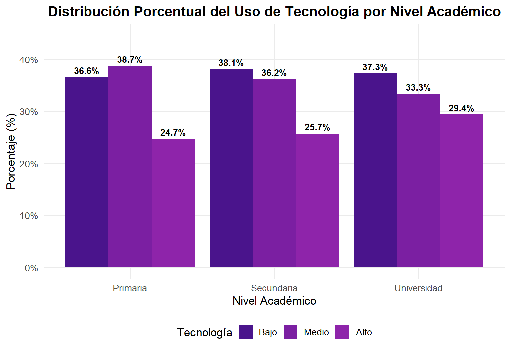
Mostrar código
# Cargar las librerías necesarias
library(ggplot2)
library(dplyr)
# Calcular los porcentajes de cada categoría de Tecnología dentro de cada Nivel Educativo
data_porcentaje <- educacion %>%
count(Nivel_Educativo, Tecnologia) %>%
group_by(Nivel_Educativo) %>%
mutate(porcentaje = n / sum(n) * 100)
# Crear el diagrama de barras apiladas con porcentajes
ggplot(data_porcentaje, aes(x = Nivel_Educativo, y = porcentaje, fill = Tecnologia)) +
geom_bar(stat = "identity", position = "stack") +
# Escala de colores morados institucionales
scale_fill_manual(values = c(
"#4A148C", "#7B1FA2", "#8E24AA", "#AB47BC", "#CE93D8"
)) +
labs(
title = "Distribución Apilada: Uso de Tecnología por Nivel",
x = "Nivel Académico",
y = "Porcentaje (%)",
fill = "Tecnología"
) +
scale_y_continuous(labels = scales::percent_format(scale = 1)) +
geom_text(
aes(label = sprintf("%.1f%%", porcentaje)),
position = position_stack(vjust = 0.5),
color = "white",
size = 3.5,
fontface = "bold"
) +
theme_minimal(base_size = 13) +
theme(
plot.title = element_text(hjust = 0.5, face = "bold"),
panel.grid.minor = element_blank(),
legend.position = "bottom"
)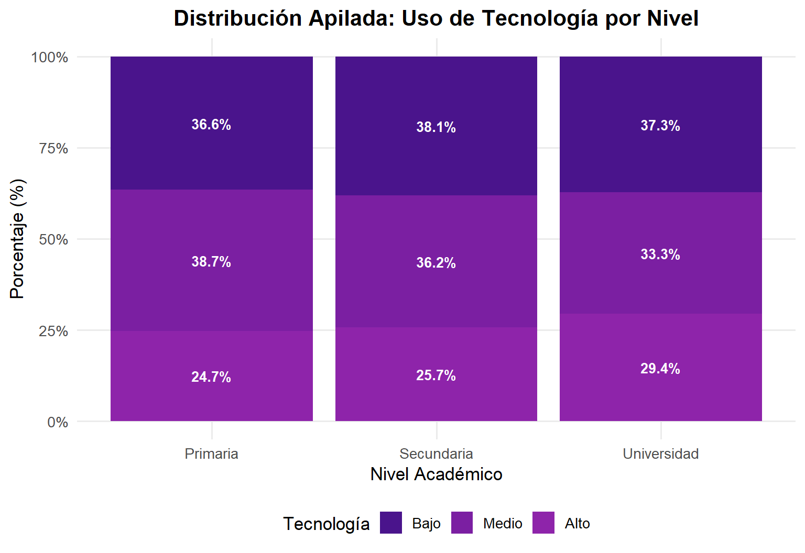
Mostrar código
# Cargar las librerías necesarias
library(ggplot2)
library(dplyr)
# Calcular los porcentajes de cada categoría de Tecnología dentro de cada Nivel Educativo
data_porcentaje <- educacion %>%
count(Nivel_Educativo, Tecnologia) %>%
group_by(Nivel_Educativo) %>%
mutate(porcentaje = n / sum(n) * 100)
# Crear el diagrama de barras apiladas horizontal con porcentajes
ggplot(data_porcentaje, aes(x = Nivel_Educativo, y = porcentaje, fill = Tecnologia)) +
geom_bar(stat = "identity", position = "stack") +
# Escala de colores morados institucionales
scale_fill_manual(values = c(
"#4A148C", "#7B1FA2", "#8E24AA", "#AB47BC", "#CE93D8"
)) +
labs(
title = "Distribución Horizontal: Uso de Tecnología por Nivel",
x = "Nivel Académico",
y = "Porcentaje (%)",
fill = "Tecnología"
) +
scale_y_continuous(labels = scales::percent_format(scale = 1)) +
geom_text(
aes(label = sprintf("%.1f%%", porcentaje)),
position = position_stack(vjust = 0.5),
color = "white",
size = 3.5,
fontface = "bold"
) +
coord_flip() +
theme_minimal(base_size = 13) +
theme(
plot.title = element_text(hjust = 0.5, face = "bold"),
panel.grid.minor = element_blank(),
legend.position = "bottom"
)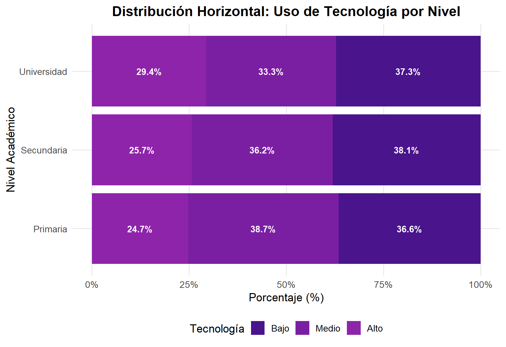
El análisis conjunto de las tablas de frecuencias absolutas y relativas (N=300) revela una distribución muestral homogénea entre las categorías de nivel educativo, con una ligera prevalencia de Educación Secundaria (35.00%, n=105), seguida de Universidad (34.00%, n=102) y Primaria (31.00%, n=93). En relación con el uso de Tecnología, la población muestra un comportamiento concentrado en los niveles Bajo (37.33%, n=112) y Medio (36.00%, n=108), mientras que el nivel Alto abarca el 26.67% restante (n=80).
A nivel bivariado, la máxima frecuencia conjunta corresponde a los participantes con nivel de Secundaria y uso de Tecnología Bajo (13.33%, n=40). En contraste, la menor representatividad muestral se observa en la combinación de Primaria con nivel de Tecnología Alto (7.67%, n=23). Si bien la proporción de uso tecnológico alto incrementa conforme aumenta el nivel educativo —alcanzando su punto máximo en la categoría Universidad (10.00%, n=30)— se evidencia un sesgo generalizado hacia niveles de adopción tecnológica bajos y moderados en todos los estratos educativos evaluados.